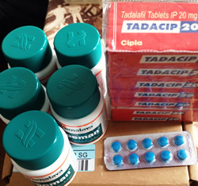

<?xml version="1.0" encoding="UTF-8"?><rss version="2.0"
	xmlns:content="http://purl.org/rss/1.0/modules/content/"
	xmlns:wfw="http://wellformedweb.org/CommentAPI/"
	xmlns:dc="http://purl.org/dc/elements/1.1/"
	xmlns:atom="http://www.w3.org/2005/Atom"
	xmlns:sy="http://purl.org/rss/1.0/modules/syndication/"
	xmlns:slash="http://purl.org/rss/1.0/modules/slash/"
	>

<channel>
	<title>早漏 &#8211; くすりエクスプレスの教えてQ＆A</title>
	<atom:link href="https://www.kusuriexpress.com/qna/category/pe/feed/" rel="self" type="application/rss+xml" />
	<link>https://www.kusuriexpress.com/qna</link>
	<description>多くの方が気になる病気・症状の質問集</description>
	<lastBuildDate>Mon, 09 Jul 2018 01:47:48 +0000</lastBuildDate>
	<language>en-GB</language>
	<sy:updatePeriod>hourly</sy:updatePeriod>
	<sy:updateFrequency>1</sy:updateFrequency>
	<generator>https://wordpress.org/?v=4.7.5</generator>
	<item>
		<title>早漏とは？原因・対策・治療薬について</title>
		<link>https://www.kusuriexpress.com/qna/%e6%97%a9%e6%bc%8f%e3%81%a8%e3%81%af%ef%bc%9f%e5%8e%9f%e5%9b%a0%e3%83%bb%e5%af%be%e7%ad%96%e3%83%bb%e6%b2%bb%e7%99%82%e8%96%ac%e3%81%ab%e3%81%a4%e3%81%84%e3%81%a6/</link>
		<pubDate>Wed, 13 Jun 2018 02:35:49 +0000</pubDate>
		<dc:creator><![CDATA[くすりエクスプレス]]></dc:creator>
				<category><![CDATA[早漏]]></category>
		<category><![CDATA[ポゼット]]></category>

		<guid isPermaLink="false">https://www.kusuriexpress.com/qna/?p=3502</guid>
		<description><![CDATA[早漏の定義について 早漏治療はおまかせください早漏の定義にいろいろある理由は、他人と比較対照する機会がないからです。これはペニスのサイズについても言えることです。サウナでブラブラしている物を比べても比べたことにはなりません。... <span class="more">続きを読む</span>]]></description>
				<content:encoded><![CDATA[<h3>早漏の定義について</h3>
<p>早漏治療はおまかせください早漏の定義にいろいろある理由は、他人と比較対照する機会がないからです。これはペニスのサイズについても言えることです。サウナでブラブラしている物を比べても比べたことにはなりません。</p>
<p>したがって男は、「早い」とか「小さい」と言われるとドキリとします。悩まなくてよいことを悩んでいる場合も少なくないと思われます。ムダな悩みをしないために、そしてほんとうの悩みを解決するために、早漏にどんな定義があり、それにどんな意味があるのかをまず見ておくことにしましょう。</p>
<h3>こんなにいろいろある早漏の定義</h3>
<p>早漏という言葉を聞いて少しドキリとしない男性はあまりいないでしょう。早すぎる失敗をしたことがない男性はいないし、他人より早いと言われればそうかもれないと思ってしまうのです。</p>
<p>早漏とは何か、どれくらい早いと早漏なのかという「早漏の定義」を男性が熱心に求めるのは、早漏かもしれないという「おびえ」がどの男性の心にもあるからです。「三こすり半」という古い冷笑の言葉がいまだに流通しているのは、そのおびえの根強さをよくあらわしています。</p>
<p>早漏の定義でよく見聞きするのは次のようなものです。</p>
<p>・挿入した瞬間の刺激にたえられずに射精すること<br />
・挿入から1分以内の射精<br />
・挿入から3分以内の射精<br />
・膣内でピストン運動を小休止して射精をこらえることができないこと<br />
・女性がイク前に射精すること<br />
・射精のタイミングを自由にコントロールできないこと</p>
<p>女性がイク前に射精することとか、タイミングを自由にコントロールできないことが早漏だとすると、たいがいの男性は早漏だということになりそうです。</p>
<p>しかし男女のセックスの話なのですから、早すぎるかどうかの基準に女性の満足という要素が入ってくるのは当然です。男女同時にイクとしたら30秒でも早漏とは言えないでしょう。少なくとも、相手を変えない限りは問題が生じません。</p>
<p>1分以内とか、3分以内という時間で区切る定義は、医学的な根拠があるわけではなく何となくそう言われてきた「目安」のようなものです。早いとか遅いと言っているときに、それは何分くらい?と疑問になるのは当然です。そこでアメリカの泌尿器学会では、時間で区切るとしたら1分が妥当だという基準を設けました(2008年)が、これも目安以上のものではありません</p>
<p>いざというとき立たないのではないかという恐怖と同様に、早くイッテしまうのではないかというのはいわば男の原始的な恐れです。この恐怖につけこむ商法もいろいろあるので気をつけなければなりません。</p>
<h3>時間を基準にした早漏の定義</h3>
<p>早漏が医学的にはあまり問題にならないのは、射精できるわけなので男性不妊のような治療の対象にならないからです。しかしセックスは子づくりのためにだけするわけではないので、早すぎる射精は男性にとっても女性にとってもセックスのクオリティに影響を与える大きな問題です。</p>
<p>そこでアメリカの泌尿器学会では2008年に次のような「早漏の定義」を発表しました。</p>
<p>毎回あるいはほぼ毎回、膣内に挿入前あるいは挿入後1分以内に射精する。<br />
射精をコントロールできないことが心理的に負担になり、セックスが苦痛になったり、セックスを避けようとするようになる。<br />
つまり一応1分という時間的な基準を設けるが、それだけではなく早いことが本人のストレスになっている場合を早漏と定義しよう、ということです。1分以内でも30秒以内でも本人が平気なら早漏とは言わない、というのはなるほどそうでしょうが、その場合は女性も平気でないとかならずしも無事には済みません。</p>
<p>しかし、挿入前とか挿入後数秒で射精してしまうとなると、それが平気な男性も女性もまずいないでしょう。本当に深刻な早漏は毎回そういうことになるケースです。</p>
<p>このようなケースでは一般的な早漏対策やトレーニングは無効なことが多いので、早漏治療薬（ダポキセチン配合）の使用も考えるべきです。最近は新しい早漏の治療薬として、脳の神経伝達物質に作用して射精反射を遅らせるダポキセチンという成分も使用されており、泌尿器科やクリニックでも必ずと言ってよいほど処方される早漏改善薬として普及しています。</p>
<h3>女性の満足を基準にした早漏の定義</h3>
<p>射精まで何分かというようなことはではなく、女性がオルガスムスに達する前に射精するのが早漏だ、というのもよく聞く早漏の定義です。</p>
<p>自分だけ気持ち良くなって女性を置いてきぼりにし、さっさと背中を向けて寝てしまう身勝手な男―そんなふうに思われたくないので、というより男がセックスする目的の半ばは女性が感じるところを見たいということなので、この定義は男心にぐさりと突き刺さります。</p>
<p>こう言われるとたいがいの男性は「じゃあ俺も早漏の部類に入るかもしれない、テクニック不足という面もあるな」などと思ってしまうことになります。</p>
<p>インターネットでは、自在に射精のタイミングをコントロールして何度も女性をいかせるAV男優秘伝のテクニック、などというものも宣伝されています。それってどんなものだろう、と男ならちょっと興味を持たないわけにはいきません。</p>
<p>しかしこれは早漏の悩みからは、実はかなり外れてしまっています。そういう探究や研究はどんどんやればよいとしても、ほんとうに深刻な早漏の悩みはそういうことではありません。接して10秒、あるいは20秒もつかもたないかということなのです。</p>
<p>性豪ではないかもしれないがふつうの男性が「早漏ではないか」と悩まないためにも、その定義はシンプルに「1分以内で射精してしまうこと」としておくのが妥当かもしれません(全米泌尿器科学会も1分という時間を目安に上げているそうです)。1分もてば上手に小休止を入れることで、女性にも満足してもらえる結果が得られる可能性が出てきます。</p>
<p>ただ、やはり射精をがまんして性行為に臨んでも満足度や男性としての自信の向上にはつながらないため、多くの男性がダポキセチン配合の早漏治療薬で早漏の不安なしで性行為を満喫しているのです。</p>
<h3>早漏の原因について</h3>
<p>早漏の原因についてぜひ一度じっくり考えなおしていただきたいのは「亀頭の敏感さが早漏の原因」という広く世の中に流通している俗説です。</p>
<p>それが正しいとすると、早漏の対策はどうやって、またどれだけ亀頭を鈍感にしたら良いかという問題になります。しかし、これって少しおかしくないでしょうか。</p>
<p>早漏の本当の原因はすぐ気持ち良くなってしまうことではなく、あまり気持ち良くならないうちに射精してしまうことです。原因を読み違えると対策はもちろんすべて無駄になるので、まずそこから充分研究したいところです。</p>
<h3>仮性包茎による亀頭の敏感さが早漏の原因というのは本当ですか?</h3>
<p>早漏の原因としてもっともよくあげられているのが、仮性包茎です。仮性包茎とは勃起したときは亀頭が露出するが、ふだんは亀頭が包皮につつまれている状態のことです。これは病気でもなんでもなく、日本人の60％以上は仮性包茎だといわれています。</p>
<p>包茎手術というのは医学的には、真性包茎で勃起時にも亀頭が露出せず性交が困難な場合の手術です。これには健康保険が適用されますが、仮性包茎の手術には適用されません。</p>
<p>仮性包茎が早漏の原因といわれる理由は、ふだん包皮につつまれて下着などにこすれることがないので刺激に対して敏感だから、ということです。「なんだ、それだけか」という感じなのですが、ほかに包茎原因説の根拠は何もなさそうです。</p>
<p>しかし、亀頭がふだんからパンツの布でこすれるようになったからといって、早漏が治るものでしょうか。そもそも「亀頭の敏感さが早漏の原因」というのは正しいのでしょうか。だとすると早漏の人はマスターベーションでも異常に早く射精してしまうことになりますが、そうではない場合も多いのです。</p>
<p>結論から言うと、亀頭の敏感さが早漏の原因だというのは俗説で、包茎は早漏には関係がありません。亀頭は敏感でないと困る器官で、亀頭の皮膚を手荒にあつかって鍛えようとするのはたいへん危険です。</p>
<p>早漏は亀頭が敏感すぎて強い快感が脳に伝わるのが原因ではなく、それほど強くない快感で脳が射精反射をしてしまうことです。責任(原因)は亀頭にあるのではなく、脳や神経(自律神経)にあります。脳に関係があるのだから、心にも関係があります。</p>
<p>ではなぜ整形外科や形成外科などの広告で、早漏の治療のためとして仮性包茎の手術がすすめられているのでしょうか。病院によっては俗説どおり過敏説を説いているところもありますが、包茎だと見た目が子どもっぽいと感じる包茎コンプレックスをなくするためとしている所もあります。</p>
<p>しかし「短小、包茎、早漏」という悪口に象徴されるような包茎コンプレックスというのも何の実体のないものなのですから、手術という手段でそれに応えるというのもいかがなものかという気はします。</p>
<h3>セックスの不慣れが早漏の原因ですか?</h3>
<p>慣れないことをするときは緊張もするし、失敗の確率も高くなります。セックスでも膣の入り口を探しているうちに萎えてしまったとか、興奮しすぎて発射してしまったというような失敗はめずらしくありません。</p>
<p>これは誰にでもおこりうることで、たいがいは慣れると問題なくなるものです。しかし人の心には「予期不安」というやっかいなものがあり、そのせいで問題がこじれることがあります。予期不安とは、いちど失敗するとまた失敗するのではないかという不安が大きくなり、それがストレスになって心配が現実になりやすいということです。</p>
<p>新婚の夫がこういう予期不安の悪循環にはまると、口実を作ってセックスを避けるようになったりすることさえあります。新婚の妻にとってこれは非常にストレスの高い、訳のわからない状況で、離婚に発展することさえあります。</p>
<p>問題をこじれさせないためには、早い段階でざっくばらんに悩みを妻(女性)に打ち明けることですが、なかなかそれが簡単でないのがこの問題のデリケートなところです。しかし、一度うまくいくと悩みがあっさり解消してしまう可能性が高い問題だけに、手をこまねいていてこじれさせるのは残念です。</p>
<p>失敗が自信を喪失させて予期不安を大きくしているのが原因の早漏は、どんな形であれ自信がつくこと、心に余裕ができる＜アドバンテイジ＞をもってセックスに臨むことが成功の秘訣です。効くと思えば効くというブラセボ効果を利用するのです。</p>
<p>たとえば、硬く勃起させることで早漏にもある程度の効果があることが認められている、バイアグラなどのED治療薬や、ジェネリックED治療薬を使ってみるのも1つの方法です。失敗してもすぐに「再(勃)起できる」というのも安心材料になります。</p>
<p>実際に、早漏とED（勃起不全）は同時に起こることが多いことで知られており、バイアグラやジェネリックED治療薬などで非常に硬い勃起ができると『なかなか射精に到達しない』という贅沢な悩みを持つ男性が多いのも現実です。セックスに不慣れな場合、緊張で勃起が不十分な場合も多く、早漏の原因であることも知っておくべきでしょう。</p>
<p>ED治療薬は、心因性（ストレス・緊張）のEDにも高い効果があるため、勃起力に自信がない早漏男性はまずED治療薬から検討すべきでしょうか。</p>
<h3>正常位が早漏の原因になることがあるの?</h3>
<p>男性は思春期から10年前後もマスターベーションだけの「性生活」をおくります。その姿勢は、あお向けに寝て自由に空想(妄想)の世界に遊びながらか、座ってインターネットの画面を見ながら、というのがほとんどだと思います。</p>
<p>そのすっかりなじんだ1人セックスと女性との行為はシチュエーションがまったく違います。緊張するのはもちろんですが、なにかと勝手が違うのです。まずは正常位からということになりますが、そもそもうつぶせの姿勢に慣れていません。</p>
<p>相手の顔が目の前にあるのもプレッシャーです。片手の腕立て伏せのような姿勢でもう一方の手にペニスをもち、膣の入り口に見当を付けようとしているうちに萎えてくる場合があります。やっと硬度を維持して挿入するとこんどはたちまち射精してしまう、という失敗もめずらしくありません。</p>
<p>正常位という姿勢そのものが早漏と関係があるわけではありませんが、慣れない状況でという心理的負担は早漏の原因になることがあります。そういう場合は男性に原始的な優越感をあたえる「雄の姿勢」であるバックの体位が役に立つことがあります。心理的余裕が勃起不全にも早漏にもよい影響を与えるのです。</p>
<h3>ストレスや自律神経の失調が早漏の原因になるのですか?</h3>
<p>亀頭の過敏さを早漏の原因と考えるより、心理的なストレスや自律神経の不調を原因と考える方がより正解に近く、見当違いの対策で迷路にはまるリスクを避けることができます。</p>
<p>亀頭はセックスの快感を収集するために敏感に作られている器官なので、その感覚をにぶくしようという考え方はどこか本末転倒しています。早漏の原因は亀頭が敏感なために早く快感のクライマックスに達してしまうというより、快感のレベルが低いうちに射精反射が発動してしまう症状です。</p>
<p>射精反射は瞬間的な快感の強さによって発動されるのではなく、快感の量がある程度以上に蓄積されることで発動します。それにはある程度の時間もかかります。早漏はこの蓄積の前にゴーサインが誤作動する症状です。</p>
<p>したがって仮性包茎を手術してふだんから亀頭がパンツの布でこすれるようにしても、「低レベル発射」の症状は改善しません。コンドームを厚くしてさらに快感を低レベルにしようというのも、幸せな解決法とはいえません。</p>
<p>早漏の本当の解決とはそんなことではなく、亀頭で充分に快感を集めて、その快感をプールに水を貯めるようにプールして、満を持して発射することです。男性は女性よりセックスの快感が小さいとよく言われますが、男性にもセックスの快感という報酬系の神経伝達の仕組みがちゃんと備わっています。</p>
<p>その仕組みに何からの原因で不調が生じているのが早漏です。その原因としてはストレス、自律神経の失調、脳内ホルモンの分泌不足などいろいろ考えられます。亀頭のせいではないのです。</p>
<p>射精反射は自律神経のはたらきで、意志ではコントロールできない作用です。したがって「快感をプールする」のも「引き金に余裕をもたす」のもいうほどに簡単ではありません。しかし早漏改善の王道はたぶんそこにしかありません。</p>
<h3>これだけは知っておきたい射精の仕組み</h3>
<p>睾丸で作られた精子がペニスの先から飛び出すのが射精だというアバウトな「知識」では、「おちんちんには骨があるの?」という女の子とあまり変わりがありません。早漏の改善に直接役立つかどうかは別にして、射精のメカニズムの基本は知っておきたいものです。</p>
<p>射精に関与している重要な臓器に前立腺があります。膀胱のすぐ下にあって、中央を尿道が通っています。この前立腺の中央を通っている尿道が、射精前の精液の最終待機所になります。</p>
<p>ペニスが勃起すると、尿道の上の方つまり膀胱側ある弁(内括約筋)が固く閉まって、尿の流入を防ぎます。下の方のペニス側にも弁があって(外括約筋)それも固く閉まります。そうしないと発射の命令がある前にだらだらと流出してしまうからです。</p>
<p>この閉じられた区間の尿道には精管からの通路があり、精液がたまる部屋になっています。前立腺からも前立腺液がここで供給されます。</p>
<p>勃起したペニスが快感を集めるにしたがってクライマックスが近づいてきますが、このとき俗にいう「先走り液」が外括約筋の近くにあるカウパー腺から分泌されます。このカウパー腺液はペニスの中の尿道を滑らかにするとともに、尿で酸性になった尿道をアルカリ性に変える役目をします。</p>
<p>そして快感が充分に蓄積されると射精中枢が発射指令を出します。精液の出口の弁が解放されるとともに、尿道括約筋などの筋肉がいっせいに収縮して精液を勢いよく放出します。中途半端で早漏ぎみのクライマックスではこの勢いが弱くペニスの先からだらだらと出る程度ですが、充分に快感が蓄積された後の射精ではときに1メートル以上も飛ぶことがあり射精感もスッキリしたものになります。</p>
<p>この切れの良い射精感を味わうためにも、早漏はできるだけ早く治したいものです。と言っても焦らせるつもりではありません。がんばって改善すれば良いことがあると言いたかったのです。</p>
<h3>自分に合った早漏治療を見つけよう</h3>
<p>早漏の改善のためにインターネットなどで調べると、さまざまな情報があってどれが正しいか迷ってしまいます。</p>
<p>包茎の手術を進めるもの、最新の治療薬があるというもの、厚いコンドームを使えというもの、AV男優のテクニックに学べというもの―実にさまざまです。</p>
<p>なかには正しいとは言えない方法もあるようでその見極めも大切ですが、自分に合った方法を見つけることがなにより肝心です。</p>
<h3>病院での早漏治療について知っておこう</h3>
<p>病院での早漏治療でまず知っておきたいのは、外科系と内科系では治療の内容がまったく異なることです。分りやすく言うと、基本的に手術で治そうとする病院と早漏治療薬で治そうとする病院の2種類があります。</p>
<p>手術で治そうとするのは、早漏の原因を亀頭の過敏さや自分のペニスに対するコンプレックスにあると考えて、包茎の手術、亀頭増大手術、陰茎増大手術などをすすめる病院です。掲げている診療科目は＜形成外科・泌尿器科＞などが多いようです。</p>
<p>早漏治療薬で治そうとするのは、原因を脳内ホルモンの分泌バランスや自律神経の失調にあると考えて、セロトニンなどの神経伝達物質に作用する薬を処方する病院です。EDの専門外来などが行っている早漏治療はこのタイプで、＜内科・泌尿器科＞などの診療科目をかかげています。</p>
<p>上記の手術のなかで包茎手術は大きなリスクはありませんが、肝心の効果が疑問です。亀頭増大手術や陰茎増大手術は、皮下にシリコンなどを入れることで感覚を鈍らせる効果と、コンプレックスを解消して自信を持つことで、早漏を改善しようとするものです。これも心理的効果以外は「感覚をにぶくする」という考え方です。費用がかなり高額でリスクがある割には効果は限定的です。</p>
<p>早漏の実態は、すぐに強い快感を感じてしまうことではなく、ごく弱い快感ですぐに射精してしまうことです。亀頭が感じる快感を減らすことで早漏を改善しようとすると、「どこまで亀頭を無感覚にすれば済むのか」という問題にすぐ突き当たってしまいます。</p>
<p>早漏治療の先進国アメリカでは、早漏の原因が神経伝達物質の作用が原因と認識されており、『ダポキセチン』と呼ばれる早漏治療の成分が早漏男性の射精時間を大幅に延長させると立証され、ED外来や泌尿器科では、ダポキセチン配合の「プリリジー」、安価なジェネリック薬（ポゼット、エバーラストなど）が早漏改善の特効薬として広く普及しています。</p>
<h3>コンプレックスをあおる商法に注意しよう</h3>
<p>インターネット、スポーツ新聞などで「短小・包茎・早漏」と3点セットで「男性の悩みに応える」としている広告には注意が必要です。</p>
<p>これは「高血圧、高血糖、高コレステロール」をメタボリックシンドロームの要因としてセットで論じるのとはわけが違います。お互いに関係がない要素でセットにする必然性がないのです。</p>
<p>このいわば「男性コンプレックス・シンドローム」は男性の心配をあおるためにムリに組み合わされたものです。それどころかこれは、本来は侮蔑的な言葉で相手を怒らせるときに言う悪口の類です。「アホ・バカ・マヌケ」と同じレベルのガキのケンカ言葉です。</p>
<p>しかしこんな幼稚な悪口でも、意外に男性のコンプレックスを刺激する効果があるようです。その理由はたぶん、この3つがどれも他人と比較する機会がほとんどない身体の特徴だというところにあります。</p>
<p>男同士がお互いに勃起したペニスを見比べることはありません。見たことのない他人のペニスを短小とか包茎とかいうのはナンセンスで、まして早漏かどうか分るわけがありません。</p>
<p>それを見る可能性があるのは「共通の彼女」ということになりますが、そんなことを言いふらす女性が多いとはあまり考えたくありませんね。したがって「短小・包茎・早漏」というのは「おまえのかあちゃん出ベソ」と同じで、根拠ゼロの悪口にすぎないのです。</p>
<h3>包茎手術で早漏の改善が期待できる?</h3>
<p>包茎の手術には2種類あります。1つは勃起したときも亀頭が包皮につつまれている「真性包茎」で、もう1つは勃起したときは亀頭が露出する「仮性包茎」です。</p>
<p>真性包茎は性行為ができないし包皮内に垢がたまって不潔になるので、手術する必要があります。手術費用は健康保険が適用されるので、自己負担分は2～3万円ですみます。</p>
<p>仮性包茎は医学的にはまったく手術の必要がないものですが、</p>
<p>・早漏の原因になっている<br />
・見た目が子どもっぽい</p>
<p>という理由で手術することがあります。この場合は自由診療になるので費用はすべて自己負担です。病院によって差がありますが10～15万円程度かかります。</p>
<p>問題は仮性包茎を手術すれば包茎が改善するのか、ということです。残念ながら期待薄です。ふだんから亀頭が露出していて下着の布にこすれることで、亀頭がセックスのときの摩擦刺激にも過敏に反応しなくなる―これが形成外科などが手術を進める理由ですが、この2つにどれくらい関係があるのかたいへん疑問です。</p>
<p>そもそも早漏の原因が亀頭の過敏さにあるという考え方は、広く流布しているわりには根拠が乏しく、むしろ医学的には否定されつつあります。早漏は亀頭が強い刺激に弱いことではなく、弱い刺激・短時間の刺激で射精してしまうことです。</p>
<p>亀頭が感じる性的快感をどんどん弱めることで射精を遅らせようという考え方は、根本的なパラドックスを抱えていることに注意したいものです。</p>
<p>欧米を中心に、現在では日本の泌尿器科やクリニックでも早漏の原因は脳の神経伝達物質が強く影響するため、『ダポキセチン配合』の早漏治療薬の処方が一般的になりました。</p>
<h3>麻酔スプレーや厚めのコンドームで「快感を弱める早漏治療」の効果と限界</h3>
<p>包茎対策で現在もメインになっている考え方は「なるべく亀頭に快感を与えない」ということです。当サイトではこの考え方がどこか変じゃないかと疑問を呈しているのですが、なかなか根強い考え方でこれに基づいた「対策用品」がいろいろあります。</p>
<p>皮膚用の局所麻酔剤を亀頭に塗るクリームタイプやスプレータイプの商品もその1つです。成分はリグノカイン、プリロカインなどの広く使われている局所麻酔剤で、脳に伝わる痛みの信号を遮断する作用があります。</p>
<p>この局所麻酔剤を使用するとたしかに亀頭は一時的にある程度感覚麻痺の状態になります。これを塗ってマスターベーションすると、なかなかイケなくて塗るんじゃなかったと後悔することになるかもしれません。</p>
<p>ということは当然、性行為でもこれまで30秒持たなかった人が1分、2分ともつようになることが期待できます。しかし問題は、人間はペニスでというより大脳でセックスすると言いたくなるようなややこしいところがあることです。</p>
<p>早漏が亀頭が感じる刺激の強さの問題なら、挿入前の射精とか挿入直後の射精というよくある症状の説明がつきません。亀頭に麻酔剤を塗ってもこういう症状はなくならないかもしれないのです。生身の女性とセックスするときは、マスターベーションでの実験は必ずしも役に立たないのです。</p>
<p>これと同じことが、厚めのコンドームを使用することについても言えます。ある程度の効果は期待できますが、それは限定的だし根本的な解決でもありません。必要に応じてこういう方法を使うことはまったく問題ありませんが、それだけでは淋しいものがあります。男性の快感を鈍らせるのではなく、むしろ大きくするような「幸せな早漏対策」もぜひ考えたいところです。</p>
<h3>マスターベーションでのスタート&#038;ストップ法は効果があるの?</h3>
<p>早漏改善法として有名なトレーニングにマスターベーションのときに行う「スタート&#038;ストップ法」があります。これは射精しそうになったら一時手の動きを止めて小休止し、その波が治まってからまた手を動かすというトレーニングです。</p>
<p>これをマスターベーションではなく女性を相手にした実際のセックスで行なうのがセマンズ法です。セマンズ法は医師の指導に基づいてカップルが協力して行なう、アメリカで開発された方法です。日本人にはいろいろな意味でかなりハードルの高い方法で、実際に行っているカップルはほとんどないでしょう。これを簡便化したのがマスターベーションでのスタート&#038;ストップ法です。</p>
<p>この方法のポイントは</p>
<p>・包皮をこすらずに直接亀頭を刺激する<br />
・あまり強くこすらず、ソフトに刺激する<br />
・亀頭にローションなどの潤滑剤を塗って滑らかにしておく<br />
・ストップのタイミングを早めにして、ノーリターンのポイントを越さないように注意する<br />
・再スタートのタイミングも勃起を維持できる範囲でできるだけ遅くして、すぐにまた射精したくならないようにする<br />
・射精までできるだけの時間をかけることを最優先する<br />
・ある程度以上の時間をかけると、射精時の快感が強くなり、精液が飛ぶ距離も大きくなることを確認する</p>
<p>この中でとくに大切なのはストップするタイミングと再スタートするタイミングを体得することです。実際のセックスでその通りに行くとは限りませんが、ある程度の有効性は期待できます。膣の中で動かさずに射精をとどめることができれば、理屈としてはそれをくり返すことで何分でもセックスを継続できることになります。</p>
<h3>「性豪による早漏改善指南」は効果があるの?</h3>
<p>インターネットではAV男優などの「性豪」が指導する早漏改善策がさかんに広告されています。Yahoo! 知恵袋を読んでいたらいつの間にかそういうサイトに誘導されていた、などというのは珍しいことではありません。</p>
<p>1分や2分で男が果てていてはとても女性を満足させることはできない。あなたもAV男優のように体位を変えながら20分も30分も突き上げて、何回も女性をいかせて「もうダメ」と言わせよう、というのがその広告です。</p>
<p>たいへん魅力的な誘いで、そうなりたいと思わない男はいないかもしれません。指導DVDなどの価格も1万数千円と、そうべらぼうに高いとはいえないものが多いようです。</p>
<p>話はそれますが、多くのAV男優は頻繁なセックスで十分勃起を起こして、かつ長時間持続するために『ED治療薬』を使っていることが多いようです。勃起の硬さと早漏は関係しており、勃起が弱いと早く射精しやすい傾向があり、AV男優が長時間持続する理由の1つにED治療薬の使用が考えられます。</p>
<p>しかし、20分でも30分でももつといっても、AV男優がその間ずっとピストン運動を継続しているわけではありません。それはムリです。というかやってみるとすぐ分るように1分でもピストン運動の時間としてはかなり腰や心臓に負担がかかる「中距離走」です。けっしてバカにされるような超短距離走などではありません。</p>
<p>つまり連続運動としては1分もてば上等なのです。その後は射精しないためというより、腰や心臓を休めるために小休止しなければいけません。したがって、この動く・休むというユニットをくり返すことでトータル時間を延ばすことは、性豪でなくてもできないことではありません。</p>
<p>ふつうの男性がセックスにそんなに時間をかけないとしたら、それはできないからというより、それほどセックスに熱心ではなく、女性を喜ばすことにもそんなに強い意欲をもっていないからではないでしょうか。それはそれで反省すべきことですが、早漏の問題とは関係がありません。</p>
<h3>早漏改善トレーニングにはどんなものがありますか</h3>
<p>早漏改善トレーニングと言われるもので有名なのはスクイーズ法とセマンズ法です。どちらも女性に協力してもらって男女いっしょに行うものです(それができない場合はマスターベーションを利用するやり方もあります)。</p>
<p><strong>＜スクイーズ法＞ </strong><br />
スクイーズsqueeze とは指などで何かを強く圧迫することです。女性に指でペニスを刺激してもらって、射精しそうになったら指で亀頭の根元(いわゆる裏筋のところ)を上下からを強く圧迫してもらい射精をこらえます。これを数回くり返してから挿入し、射精しそうになったら抜いて同じように指で圧迫します。これを数回繰り返して最後に満を持して射精します。</p>
<p>女性に協力してもらうことで実際のセックスと同じ状況でトレーニングできますが、日本人の感覚ではこのようにざっくばらんに女性に協力してもらう気にはなかなかなれないようです。</p>
<p><strong>＜セマンズ法＞ </strong><br />
これも男女が協力して性行為をしますが、ペニスを抜かずに動きを止めることで射精をガマンし、おさまったら動きを再開します。これをくり返して4回目に射精します。側臥位がもっとも動きをコントロールしやすいと言われています。</p>
<p><strong>＜スタート&#038;ストップ法＞ </strong><br />
セマンズ法の別名ですが、とくにマスターベーションのときに1人で行なうのをこう呼ぶこともあります。</p>
<p>この他に「亀頭を鍛える」という劇画的発想のトレーニングがいろいろありますが、どれもたいへん危険なのでけっして試みてはいけません。たえとば、冷水と熱いお湯を交互にペニスにかけるいわゆる金冷法や亀頭の乾布摩擦などです。</p>
<p>亀頭は陰茎海綿体に糸のように細い動脈血管が張り巡らされている、たいへんデリケートな器官です。「むすこを鍛える」という発想はどうかお止め下さい。</p>
<p>また、スクイーズ法やセマンズ法は有効な治療薬がなかった時代に開発された早漏改善法で、ダポキセチンという成分の有効性が認められて早漏治療薬として処方されるようになってからは、病院で奨められることはない方法です。</p>
<h3>最新の早漏治療薬ダポキセチンとはどんな薬ですか</h3>
<p>早漏治療薬としてはこれまで抗うつ薬の『パロキセチン（パキシル）』が処方されることがありましたが、『ダポキセチン』を成分にする薬が開発されてからは「飲む早漏治療薬」といえばダポキセチンを指すようになりました。</p>
<p>硬い勃起ができると射精までの時間を遅らせられるため、ED治療薬を早漏改善のために飲むことがありますが、これは二次的効果が認められるということで、早漏治療薬とはいえません。</p>
<p>ダポキセチンもSSRI(選択的セロトニン再取り込み阻害薬)という抗うつ剤に使用される成分の１種ですが、とくに早漏に対して特異的な効果があることがわかり、世界各国で早漏治療薬として認可されています。日本でも2012年に厚生労働省から輸入が承認されました。</p>
<p>臨床試験も複数の機関で大規模に行なわれて、プラセボ(偽薬)グループとの比較で有意な効果が証明されています。初めてダポキセチンを飲んだ場合の効果(挿入から射精までの時間の伸長)の平均は次の通りです。</p>
<p>・服用しない場合　　　　　　0.9分<br />
・プラセボ(偽薬)を服用　　　1.4分<br />
・ダポキセチン30mg服用　　2.1分<br />
・ダポキセチン60mg服用　　2.5分</p>
<p>この効果は3ケ月、6ヶ月と継続服用(性行為の前に服用します)するほど大きくなっていて、6ヵ月間30mgを服用し続けた場合の平均は3.3分となっています。</p>
<p>ダポキセチン配合の早漏治療薬にプリリジーや、安価なジェネリック薬のポゼット、エバーラストがあり、ダポキセチン30mg/ 60mgの2種類があります。また、勃起の弱さ（ED）と早漏の関連性があるため、ED治療薬バイアグラ、レビトラ、シアリスの成分にダポキセチンを一緒に配合した、ED 早漏改善の総合薬も多くの人気を誇ります。</p>
<h3>早漏を改善する生活習慣</h3>
<p>早漏の大きな原因になっているが自律神経の失調です。交感神経と副交感神経のバランスが悪いと、早すぎる射精命令が出てしまうことがあるからです。</p>
<p>自律神経を安定させるには狭い範囲の早漏対策だけでなく、睡眠などの１日の生活リズムや食生活にも注意をすることが大切です。</p>
<h3>睡眠の質を向上して自律神経を安定させる</h3>
<p>早漏の最新治療薬ダポキセチンは脳の神経伝達物質の1つであるセロトニンの不足を補う薬です。この成分が早漏に効果があるのは、同じ脳内物質のドーパミンやノルアドレナリンが暴走して早すぎる「発射指令」を出すのを抑える作用があるからです。</p>
<p>射精中枢は意志でコントロールできない自律神経ですが、それをコントロールしているのがこれらの脳内物質のバランスです。</p>
<p>セロトニンが睡眠にも深く関係している脳内ホルモンであることはよく知られています。昼のセロトニンが夜になってメラトニンに変わることが人の睡眠リズムを作っているのです。</p>
<p>人には約24時間のサイクルで覚醒と睡眠をくり返す「概日リズム」があります。これは言いかえると「体内時計」です。太陽の光で毎日リセットされている体内時計の指令によって、セロトニンとメラトニンが交互に分泌されて覚醒と睡眠のリズムを作っています。</p>
<p>したがって、この自然のリズムを無視した生活習慣があると脳内ホルモンの分泌バランスにも影響を与えます。夜ぐっすり眠れなくなり、昼間ぼんやりしたりするようになります。つまり脳内物質の分泌バランスの崩れが自律神経の失調をきたすのです。</p>
<p>毎日規則正しい上質の睡眠を取ることでセロトニンの分泌が増えて自律神経のはたらきが安定します。それが早漏の改善にも効果があることはもちろんです。</p>
<h3>呼吸法でリラックスする</h3>
<p>腹式呼吸と胸式呼吸はどう違うのでしょうか。読んで字のごとくお腹でする息と胸でする息の違いですが、それだけではありません。</p>
<p>腹式呼吸は「ゆっくり息を吐く」ことがメインの呼吸で、吸うのはそのついでというか自然に吸ってしまうのに任せます。胸式呼吸は逆に「急いで息を吸う」ことがメインの呼吸で、吐く方がついでになります。</p>
<p>興奮して鼻の穴が開いて肩で息をしている、というのはもっともせわしない胸式呼吸の例です。あまり吸う方に一生懸命になると過呼吸という状態になることもあります。忙しいとき、イライラしているときなどは人は自然と胸式呼吸をしています。</p>
<p>ここで興味深いのは、呼吸はふだんは意識せずに、つまり自律神経のはたらきでおこなっていますが、息を吸うときは交感神経が優勢になり、息を吐くときは副交感神経が優勢になっています。</p>
<p>つまりいつもせかせか胸式呼吸をしていると交感神経が優勢な緊張状態が続くのです。逆にゆっくり息を吐く腹式呼吸をしていると副交感神経が優勢になるリラックス状態が続くことになります。</p>
<p>射精反射が発動されるときは交感神経が優勢になっています。ふだん腹式呼吸をする習慣をつけると副交感神経が優勢なリラックス状態が増えて、早漏の改善にも役立つことが期待できます。</p>
<p>腹式呼吸をするには、10～15秒くらいかけて鼻からゆっくり息を吐きます。それだけで自然にお腹がへこんで腹式呼吸になります。吐くのを止めると自然に息は吸いこまれます。これを気がついたときに1日4～5回、5～6分間くり返すと、腹式呼吸の習慣がついてきます。</p>
<h3>1日の生活リズムを整えて脳内ホルモンを活性化する</h3>
<p>自律神経の交感神経と副交感神経がバランスよくはたらくことが、早漏の改善にぜひ必要なことです。そのためにはまず3つの脳内ホルモンであるセロトニン、ノルアドレナリン、ドーパミンがバランスよく分泌されなければなりません。</p>
<p>とくに緊張を緩和して心をリラックスさせるには、充分にセロトニンが分泌されてドーパミンとノルアドレナリンの暴走を抑える必要があります。セロトニンの分泌をさかんにする日常生活の行為は次のようなものです。</p>
<p><strong>＜早起きして朝日を浴びる＞ </strong><br />
夜の間分泌されていた睡眠ホルモンのメラトニンは、朝になるとセロトニンに切り替わります。そのスッキリした切り替わりに役に立つのが朝の太陽の光を浴びることです。それによって体内時計がリセットされるて、身体が覚醒モードに入ります。</p>
<p><strong>＜朝食をしっかり食べる＞ </strong><br />
朝食を食べることも身体を覚醒モードにして、１日の生活リズムを作るうえでとても大切です。脳のエネルギーになる炭水化物とセロトニンの材料になるアミノ酸(タンパク質)などをバランスよく食べましょう。</p>
<p><strong>＜夜はしだいに休憩モードに入る＞ </strong><br />
昼間はぼんやりしていて、夜暗くなってから目が輝いてきて活動モードに入るというような夜型の生活は、自然の生活リズムを狂わせがちで睡眠の質も悪くなります。夕食は午後８時前には済ませて、夜はゆっくりリラックして過ごし自然な眠気がおそってくるのを待ちましょう。夜遅くまでパソコンの画面に向かってゲームに熱中するなどで神経を興奮させるのはよくありません。</p>
<h3>早漏改善に良い食生活と悪い食生活</h3>
<p>朝食を食べないで学校にくる子どもはキレやすい、という話を聞いたことがあると思います。これは１日の活動のリズムを作る朝食を抜くことで、自律神経のバランスが悪くなり、感情の抑制が効かなくなっているせいです。これは早漏改善を目指す人にも良くありません。</p>
<p>栄養素ではどれがとくに早漏の改善につながるということはありませんが、炭水化物や脂質にかたよらないでタンパク質も摂取するように注意してください。コーラを飲みながらドーナツを食べるというようないわゆるジャンクフード好みは糖質過多になりがちです。極端な場合は「糖質依存症」という、脳がいくらでも糖質を要求するという病気になることもあります。</p>
<p>食べやすい柔らかいものばかりを食べないで、食物繊維を含んだ噛み応えのあるものをよく噛んで食べるということも大切です。噛む行為は副交感神経を優勢にして気持ちを落ちつかせる効果があります。食物繊維は血糖値の急上昇を防ぐことでやはり自律神経の安定に寄与します。</p>
<p>ミネラル類では、カルシウム、鉄分、亜鉛が不足しがちなので注意する必要があります。とくにカルシウムは不足しやすいので気をつけましょう。男性は鉄分や亜鉛が不足することはあまりありませんが、極端な偏食をすると不足することもあります。これらのミネラルは身体の働きを調整する酵素の材料になる大切な栄養素なので、不足すると自律神経のはたらきも不調になります。</p>
]]></content:encoded>
			</item>
		<item>
		<title>早漏と早漏改善薬</title>
		<link>https://www.kusuriexpress.com/qna/%e6%97%a9%e6%bc%8f%e3%81%a8%e6%97%a9%e6%bc%8f%e6%94%b9%e5%96%84%e8%96%ac/</link>
		<pubDate>Thu, 07 Jun 2018 01:35:57 +0000</pubDate>
		<dc:creator><![CDATA[くすりエクスプレス]]></dc:creator>
				<category><![CDATA[早漏]]></category>
		<category><![CDATA[ポゼット]]></category>

		<guid isPermaLink="false">https://www.kusuriexpress.com/qna/?p=3228</guid>
		<description><![CDATA[「なるべく快感を与えない」は早漏の解決法にならない 早漏は「亀頭の過敏さ」が原因だという考え方が当然のように広まっていますが、これはじっさいに早漏の改善しようとするときには実はあまり役に立ちません。... <span class="more">続きを読む</span>]]></description>
				<content:encoded><![CDATA[<h3>「なるべく快感を与えない」は早漏の解決法にならない</h3>
<p><a href="../../../../categories/night-life/%E6%97%A9%E6%BC%8F%E6%94%B9%E5%96%84%E8%96%AC/index.html">早漏</a>は「亀頭の過敏さ」が原因だという考え方が当然のように広まっていますが、これはじっさいに早漏の改善しようとするときには実はあまり役に立ちません。</p>
<p>この考え方で早漏対策をすると、厚めのコンドームをするとか、包茎の手術をしてふだんから亀頭が露出するようにする、という方向にいきがちですが、どちらもほんとうの早漏対策とはいえないからです。</p>
<p>こういう対策のなかには、熱いお湯と冷水にペニスを交互につける「金冷法」とか、ペニスを棒でたたいてきたえるというようなものまであります。こういうのは劇画のなかだけの話かもしれませんが、「ペニスをきたえる」という発想はなかなか根強く男性の頭を支配しています。</p>
<h3>早漏は低い快感レベルでの射精反射</h3>
<p>しかし、亀頭はもともと性的な快感をえるために敏感に作られた器官ですから、その感覚をにぶくして射精を遅らせようというのは、少しおかしな考え方です。</p>
<p>早漏は少しの(短時間の)性的快感で射精してしまうのが問題なのですから、その快感をさらにミニマムにしようという対策は、幸せな解決法とはいえません。コンドームをじゅうぶん厚くすればえられる快感は少なくなるでしょうが、勃起を保つことがむずかしくなるかもしれません。そもそも何のためにセックスするのかわからないことになります。</p>
<p>早漏は亀頭が敏感ですぐに射精までいく「つよい快感」を感じてしまうことが原因ではありません。ほんとうの原因は「低い快感レベル」で射精してしまうことです。</p>
<p>これはマスターベーションのことを思い浮かべるとわかりやすいかもしれません。マスターベーションでの射精には、勢いがつよく快感も大きい射精と、勢いがよわく快感の小さい射精の差があるのは誰もが経験していると思います。</p>
<p>快感の大きな射精はゆっくり時間をかけたときに、快感の小さな射精はそさくさと短時間でしたマスターベーションのときといってよいでしょう。</p>
<p>早漏は、すぐに快感を感じてしまう敏感さが問題なのではなく、よわい快感ですぐに射精してしまうことが問題なのです。</p>
<h3>ゆっくりと快感が高まってから射精するくせをつけるには</h3>
<p>亀頭で集められる快感が蓄積されて快感が高まってくると、射精中枢がゴーサインをだします。これを射精反射といいますが、この反射をつかさどるのは自律神経なので意志の力ではコントロールできません。</p>
<p>早漏のほんとうの改善は、亀頭が集める快感が蓄積するプールを大きくして、プールが満杯になるまでに時間がかかり、快感のレベルが高まっていく時間的余裕ができることです。</p>
<p>鬼頭の感覚を一時的ににぶらせて時間をかせぐことも無意味とはいえませんが、より本質的な改善策は射精反射が早すぎる反応をしないように自律神経を落ちつかせることです。</p>
<p>早漏対策のむずかしさはもともとコントロールできない自律神経をなんとかコントロールしようというところにあります。</p>
<h3>快感を蓄積して徐々に高めるプロセスを自律神経に刷り込む</h3>
<p>直接コントロールできない自律神経ですが、それをコントロールするには、環境をととのえるとか、トレーニングする(くせをつける)という間接的な方法があります。</p>
<p>人は恥ずかしい思いをしたときに顔が赤くなるとか、恐怖を感じたときに冷や汗をかくなど、心の動揺が自律神経の調子を狂わせてしまいます。</p>
<p>セックスのときも初体験のときとか気おくれのする相手のときなどは自律神経が失調して、勃起しない、早漏になる、遅漏になるなどはむしろふつうです。</p>
<p>こういう突発的な早漏はすべての男性が経験することですが、早漏のいちばん深刻な悩みは、妻とのセックスなどいつものパートナーとのセックスでいつも早くいきすぎることです。</p>
<p>こういう早漏の対策としては、マスターベーションでゆっくりいくトレーニングをするとか、パートナーに協力してもらって「寸止め」をくりかえすセマンズ法という訓練をするなどいろいろな方法が考えられています。</p>
<p>これらは、ゆっくり時間をかけて高い快感レベルで射精することを身体(自律神経)に覚えさせる方法です。そのひとつとして有効なのは、ノーマルな射精のタイミングに身体が慣れるまで、ダポキセチンという成分の薬をのむことです。</p>
<p>ダポキセチンは脳内の神経伝達物質のセロトニンとノルアドレナリンに作用して、低い快感レベルで射精反応がおきるのを防いでくれます。</p>
<p>それによってじゅうぶん時間をかけた高い快感レベルの射精ができるようになります。また、その体験をつむことで、早漏の根本的な解決を期待することができます。ダポキセチンを配合した薬には「プリリジー」とそのジェネリック医薬品の「<a href="../../../../products/%E3%83%9D%E3%82%BC%E3%83%83%E3%83%88%EF%BC%88Poxet%EF%BC%8960mg-1%E7%AE%B1%EF%BC%88%E5%90%88%E8%A8%8810%E9%8C%A0%EF%BC%89/index.html">ポゼット</a>」があります。</p>
]]></content:encoded>
			</item>
		<item>
		<title>ED（勃起不全）と早漏の関係</title>
		<link>https://www.kusuriexpress.com/qna/ed%e3%81%a8%e6%97%a9%e6%bc%8f%e3%81%ae%e9%96%a2%e4%bf%82/</link>
		<pubDate>Wed, 06 Jun 2018 07:42:55 +0000</pubDate>
		<dc:creator><![CDATA[くすりエクスプレス]]></dc:creator>
				<category><![CDATA[ED（勃起不全）]]></category>
		<category><![CDATA[早漏]]></category>
		<category><![CDATA[ED]]></category>
		<category><![CDATA[シルデナフィル]]></category>
		<category><![CDATA[スーパーPフォース]]></category>

		<guid isPermaLink="false">https://www.kusuriexpress.com/qna/?p=3213</guid>
		<description><![CDATA[男性がまず気にするのが「男の面目」 セックスのときになかなか勃起せず、立ったと思ったらすぐイッてしまう、というのは男性としてはかなりつらい状況です。なにより相手の女性に対して、男として面目ないという気持ちになってしまいます。... <span class="more">続きを読む</span>]]></description>
				<content:encoded><![CDATA[<h3>男性がまず気にするのが「男の面目」</h3>
<p>セックスのときになかなか勃起せず、立ったと思ったらすぐイッてしまう、というのは男性としてはかなりつらい状況です。なにより相手の女性に対して、男として面目ないという気持ちになってしまいます。</p>
<p>セックスの経験が豊富ではない若い男性が風俗などでこういう経験をすると、積極的に女性にアプローチするのがこわくなります。デートが順調にいってベッドまで誘えたとしても、いざというときにそんなことになったらと心配しないわけにはいかないからです。</p>
<p>つきあっている女性とのセックスで、最初からこういうことが何回か続くというのも悩ましい状況です。これからずっとこんなことが続くのだろう、女性はどう思っているのだろうか、と考えるとプロポーズする勇気はとてもでないことでしょう。</p>
<h3>なぜマスターベーションのときと違うのか</h3>
<p>しかしこのようなケースで言えるのは、どちらも重症のEDではないということです。挿入できるだけの硬さに勃起しなければこういう悩みもないわけですから、その点はひとつの明るい材料です。</p>
<p>マスターベーションのときはスムーズに勃起して、すぐに射精してしまうわけでもないという場合は、問題は「女性とする」ときの心理状態にあるということになります。</p>
<p>勃起と射精はつかさどる神経系統は別ですが、意志の力ではコントロールできない自律神経の作用だという点は共通しています。暑いときは汗がでる、走ると心臓が早く動くなど、自律神経はオートマチックに身体のはたらきを調節してくれる便利なシステムですが、弱点は心の動揺やストレスにすぐ反応してしまうことです。</p>
<p>恥ずかしい思いをすると顔が赤くなりますが、それを意識するとますます顔が赤くなるというのが自律神経のはたらきのやっかいなところです。セックスするときに、立たないのではないか、早くイッてしまうのではないかと心配すると、ますます立ちにくくなったり早くイッてしまったりしがちなのです。</p>
<h3>1回の成功体験が次の成功を呼ぶ</h3>
<p>こういうききわけのない自律神経のはたらきを矯正するには、成功体験を味あわせることがいちばんです。「<a href="../../../../products/%E3%82%B9%E3%83%BC%E3%83%91%E3%83%BCP%E3%83%95%E3%82%A9%E3%83%BC%E3%82%B9-1%E7%AE%B1(%E5%90%88%E8%A8%884%E9%8C%A0)/index.html">スーパーPフォース</a>」は、ED治療薬<a href="../../../../products/%E3%83%90%E3%82%A4%E3%82%A2%E3%82%B0%E3%83%A9100mg-1%E7%AE%B1(%E5%90%88%E8%A8%884%E9%8C%A0)/index.html">バイアグラ</a>の成分シルデナフィルと、早漏治療薬<a href="../../../../products/%E3%83%9D%E3%82%BC%E3%83%83%E3%83%88%EF%BC%88Poxet%EF%BC%8960mg-1%E7%AE%B1%EF%BC%88%E5%90%88%E8%A8%8810%E9%8C%A0%EF%BC%89/index.html">ポゼット</a>の成分ダポキセチンを1錠に配合した薬です。</p>
<p>セックスの前にこれをのんでおけば、まず勃起については確実に硬すぎるくらいのペニスになります。</p>
<p><a href="../../../../categories/night-life/%E6%97%A9%E6%BC%8F%E6%94%B9%E5%96%84%E8%96%AC/index.html">早漏防止薬</a>の成分ダポキセチンというのは耳慣れない言葉だと思いますが、これは亀頭で感じた性的刺激がすぐ射精反応に結びつかないように、脳内の神経伝達物質のセロトニンとノルアドレナリンに作用して射精中枢の興奮をしずめるはたらきをする成分です。ED治療薬だけでもある程度の早漏改善効果があることがわかっていますが、これにダポチセキンの効果をあわせることで「頼りがいのある」結果が期待できます。</p>
<p>なるべく薬に頼らないというのは良い心がけですが、ときによりけりです。うまくいかないことが心の負担になってさらに状況を悪化させているようなときは、薬にサポートされてでも成功体験をすることがなによりの改善策になることが多いのです。相手の女性にも、やればできる人なのだということがわかってもらえます。何回かこういう「実績」を積むことで心がストレスから解放されれば、薬をのまなくてよい状況まで改善することはじゅうぶん期待できます。</p>
<p><strong>中高年のED・早漏はまずED治療が優先</strong></p>
<p>じゅうぶんに硬い勃起がえられないときには早漏気味になることがあります。女性との性経験が浅いわけではない中高年の男性にEDと早漏が合併している場合は、EDを治療することで早漏も改善することが期待できます。</p>
<p>中高年のEDや早漏にも精神的なストレスなどが関係していることが多く、これという原因に思い当たらないことがほとんどです。食生活や生活習慣をみなおして体調管理をすること、心をストレスから解放する工夫をすることなどが必要ですが、やはりセックスでの成功体験がないとなかなか改善への道は開けてきません。そのために薬にサポートしてもらうことをためらう理由はありません。</p>
<h3>精力低下は軽度のED（勃起不全）で改善できます</h3>
<p>EDと言うと、完全に男性器が勃起しないので性行為ができない、または途中で萎えてしまって射精までいけない状況を想像するかもしれませんが、実際は男性が皆経験する「精力低下」は軽度のED（勃起不全）です。</p>
<p>若い頃は元気だったが最近は・・・という経験は皆お持ちでしょう。ED治療薬はそういった精力低下の男性や女性パートナーを満足させる自信が無い男性などの性生活の改善にも利用できます。</p>
<p>勃起不全や勃起力低下の症状によってED治療薬をピルカッターで割って少なめで飲むなど、一度のED治療薬服用量を減らすとは問題はありません。少なめから初めてご自身の勃起改善度をみながら調整できます。</p>
<p>ED治療薬の場合は最大服用可能量を超えたり、1日に1回以上の服用は避けてください。</p>
<h3>関連商品</h3>
<p>ED（勃起不全）と早漏を1錠で改善する治療薬は以下の商品です。</p>
<p>３大ED治療薬のバイアグラ、レビトラ、シアリスの成分と早漏改善成分（ダポキセチン）が配合された商品が販売されています。普段バイアグラやバイアグラジェネリックを使われている場合はスーパーPフォースやエクストラスーパーPフォース、シアリス、レビトラであればそれぞれ以下のED治療＋早漏改善薬を検討ください。</p>
]]></content:encoded>
			</item>
		<item>
		<title>ED薬と安定剤の併用で勃起効果を改善</title>
		<link>https://www.kusuriexpress.com/qna/ed%e8%96%ac%e3%81%a8%e5%ae%89%e5%ae%9a%e5%89%a4%e3%81%ae%e4%bd%b5%e7%94%a8%e3%81%a7%e5%8b%83%e8%b5%b7%e5%8a%b9%e6%9e%9c%e3%82%92%e6%94%b9%e5%96%84/</link>
		<pubDate>Wed, 06 Jun 2018 07:13:00 +0000</pubDate>
		<dc:creator><![CDATA[くすりエクスプレス]]></dc:creator>
				<category><![CDATA[ED（勃起不全）]]></category>
		<category><![CDATA[あがり症・不安・緊張]]></category>
		<category><![CDATA[うつ病]]></category>
		<category><![CDATA[早漏]]></category>
		<category><![CDATA[ED]]></category>
		<category><![CDATA[ED治療薬]]></category>
		<category><![CDATA[安定剤]]></category>

		<guid isPermaLink="false">https://www.kusuriexpress.com/qna/?p=3198</guid>
		<description><![CDATA[心因性のEDはED治療薬が効きにくい? バイアグラ、シアリス、レビトラなどのED治療薬はすべてPDE5阻害薬に属するお薬です。これは勃起の邪魔をするPDE5という酵素のはたらきを阻害する薬剤で、その邪魔ものが何であるかに関わらず効力を発揮するという優れた特徴があります。... <span class="more">続きを読む</span>]]></description>
				<content:encoded><![CDATA[<h3>心因性のEDはED治療薬が効きにくい?</h3>
<p>バイアグラ、シアリス、レビトラなどのED治療薬はすべてPDE5阻害薬に属するお薬です。これは勃起の邪魔をするPDE5という酵素のはたらきを阻害する薬剤で、その邪魔ものが何であるかに関わらず効力を発揮するという優れた特徴があります。</p>
<p>ED治療薬の説明に「心因性のEDにも器質性のEDにも効果を発揮します」とあるのはこの特徴のことです。しかし、看板に偽りがあるわけではありませんが、ED治療薬はときとして心因性のEDには効果を発揮しないことがあります。</p>
<p>その理由は、勃起のプロセスのどこからED治療薬が関わっているかということに関係しています。ご承知のとおりED治療薬は飲んだからといって自動的に勃起が始まる薬ではありません。セックスしたいという欲望が脳に生じて、勃起中枢がペニスに「立て」という指令を送ることで勃起がスタートしますが、ED治療薬の仕事はこの指令がペニスに届いてから始まります。</p>
<p>ED治療薬を飲んだだけでは勃起しないのはそのためです。なかには「いや、俺は飲むとすぐに勃起する」という人がいますが、それは勃起を助ける薬を飲んだということがエッチな妄想の引き金になったからです。例えば胃薬だと言われて飲んだらけっして勃起することはないのがED治療薬です。</p>
<h3>ストレス・緊張・不安は勃起の邪魔をする三大悪役</h3>
<p>勃起の邪魔をする心因性の要因では、ストレス、緊張、不安が三大悪役です。これらは①そもそもセックスしたいという気持ちになることを邪魔するというケースと、②その気はあるのだが、勃起中枢を通る指令がペニスに到達する前のどこかで邪魔されているというケースがあります。</p>
<p>人の意識にはたいへん広い無意識の領域があるというのは現代人の常識ですが、ストレス、緊張、不安が住みかにしているのも主に無意識の世界です。つまり私たちには自分では意識していないストレスや緊張がありがちで、それが勃起の邪魔をすることがあるのです。</p>
<p>ではED治療薬はそもそも心因性のEDには効果がないのでは、と思うかもしれませんが、たいがいの場合はなぜか効いてしまいます。それは心因性とか器質性とか言っても実際はさまざまな要因が絡んでいる複雑なケースがほとんどだからです。</p>
<p>また、なぜかはよく分らないがPDE5という酵素のはたらきを止めるとペニスは勃起する、という論より証拠的な面もあります。そもそもED治療薬は狭心症の治療薬を開発しているときに偶然発見されたものですから、なぜ効くかというのは後付けの理屈なのです。</p>
<p>しかしその反面、ストレスや緊張、不安はときとしてED治療薬の効き目を悪くしてしまうという事実もあります。具体的なケースはさまざまですが、</p>
<ul>
<li>すごい美人とセックスするチャンスに恵まれたが、気後れしてしまって勃起しなかった。</li>
<li>前回の失敗で、今度も勃起しないのではないかという予期不安が生じた。</li>
<li>素人の女性との性経験がないので、緊張して勃起しなかった。</li>
<li>課長に昇進してから、なぜか勃起しなくなった。</li>
</ul>
<p>などが典型的なケースです。不安や緊張が大きいほど効きにくくなるのは当然ですが、それが無意識のときにより効きにくさが出る傾向があります。</p>
<h3>効き目のゆるやかな精神安定剤をED治療薬と併用</h3>
<p>このようなときは、お酒が飲める人は少しお酒を飲んでからED治療薬を飲むとよく効く場合があります。アルコールには緊張を緩和する作用があり、それが邪魔ものを排除してくれるからです。</p>
<p>また、ED治療薬とマイナートランキライザーという作用のおだやかな精神安定剤(抗不安薬)を併用するのも効果があります。マイナートランキライザーは短時間作動型の副作用が少ない精神安定剤で、緊張や不安をしずめる作用があります。多くの種類がありますが、ED治療薬とよく併用されるのはデパスという特に作用がおだやかなお薬です。</p>
<p>マイナートランキライザーはお酒といっしょに飲むことはできないので注意してください。併用すると眠気が強くなったり身体がだるくなるなど、薬の作用が強く出ます。お酒とED治療薬はOK、マイナートランキライザーとED治療薬もOKですが、3つを一度に併用するのはNGです。</p>
<p>マイナートランキライザーは服用後30分ほどで効果が現れるので、ED治療薬と同時に飲むことができます。睡眠導入剤としても使われるお薬なので、服用後6時間は車の運転をしないでください。</p>
<p>また、セックスの前にED治療薬といっしょに飲むのはいいのですが、マイナートランキライザーだけを毎日飲むという飲み方は避けてください。</p>
<h3>早漏治療薬のダポキセチンにも緊張を和らげる効果</h3>
<p>飲む早漏治療薬として有名なダポキセチンは自律神経に作用して緊張をほぐす作用があるので、ED治療薬と併用すると早漏改善だけではなくストレスや緊張によるED治療薬の効きにくさを解消する効果も期待できます。</p>
<p>ダポキセチンは抗うつ剤SSRI(選択的セロトニン再取込阻害薬)の仲間ですが、超短時間作動型の効き目がおだやかで安全性の高いお薬です。</p>
<p>ダポキセチンを有効成分にするお薬は「プリリジー」やそのジェネリックの「ポゼット」などです。またED治療薬のジェネリックとダポキセチンを1錠に配合したお薬もあります。</p>
<p>バイアグラ＋ダポキセチン、シアリス＋ダポキセチン、レビトラ＋ダポキセチンなどED治療薬との組み合わせでいろいろなバリエーションがあります。</p>
]]></content:encoded>
			</item>
		<item>
		<title>【早漏防止】ポゼットの効果と使い方</title>
		<link>https://www.kusuriexpress.com/qna/%e3%80%90%e6%97%a9%e6%bc%8f%e9%98%b2%e6%ad%a2%e3%80%91%e3%83%9d%e3%82%bc%e3%83%83%e3%83%88%e3%81%ae%e5%8a%b9%e6%9e%9c%e3%81%a8%e4%bd%bf%e3%81%84%e6%96%b9/</link>
		<pubDate>Mon, 12 Feb 2018 03:18:20 +0000</pubDate>
		<dc:creator><![CDATA[くすりエクスプレス]]></dc:creator>
				<category><![CDATA[早漏]]></category>
		<category><![CDATA[ポゼット]]></category>

		<guid isPermaLink="false">https://www.kusuriexpress.com/qna/?p=2521</guid>
		<description><![CDATA[ポゼットについて ポゼット（POXET）は世界初の早漏症治療薬である、「プリリジー」のジェネリック医薬品であり、サンライズレメディーズ（Sunrise... <span class="more">続きを読む</span>]]></description>
				<content:encoded><![CDATA[<h4>ポゼットについて</h4>
<p><a href="../../../../products/%E3%83%9D%E3%82%BC%E3%83%83%E3%83%88%EF%BC%88Poxet%EF%BC%8960mg-1%E7%AE%B1%EF%BC%88%E5%90%88%E8%A8%8810%E9%8C%A0%EF%BC%89/index.html">ポゼット（POXET）</a>は世界初の早漏症治療薬である、「プリリジー」のジェネリック医薬品であり、サンライズレメディーズ（Sunrise Remedies Pvt Ltd)社によって製造販売されています。<br />
先発医薬品としては2009年にベルギーのヤンセンファーマ（Janssen Cilag　Pharmaceutica）が開発をした医薬品で、日本では未発売となっている薬剤です。<br />
成分としてはプリリジーと同じく「ダポキセチン」が主成分として含有されており、同じ効能効果を発揮します。</p>
<p>ポゼットは早漏症の改善薬としては、画期的な新薬として注目されています。<br />
旧来の早漏防止薬では、陰茎に対する刺激を弱めることで早漏を防いでおり、局所麻酔薬などが用いられていました。<br />
具体的には、陰茎や亀頭に対してジェルやスプレータイプの薬剤を塗布し、射精までの時間を延長させるのです。<br />
しかしながら、この方法では快感そのものも弱まってしまうという欠点がありました。<br />
ポゼットは脳内のセロトニンの量を調節することで、快感に影響を与えずに、早漏症を改善させることができるのです。</p>
<p>ポゼットを販売しているサンライズメディーズ（Sunrise Remedies Pvt Ltd)社は1995年に創業された会社で、製薬会社の中では比較的新しいメーカーとして知られています。<br />
レビトラのジェネリックとしては「ジェビトラ」、シアリスのジェネリックとしては「タダライズ」、ステンドラのジェネリックとしては「<a href="../../../../categories/ED%E6%B2%BB%E7%99%82%E8%96%AC/%E3%82%A2%E3%83%90%E3%83%8A%E3%83%95%E3%82%A3%E3%83%AB%E7%B3%BB/index.html">アバナ</a>」など、ED治療薬であるPDE-5阻害薬のジェネリックを複数種類販売しています。<br />
早漏改善薬である本剤や、女性用のバイアグラであるフィメールグラなども製造販売されており、非常に人気の高いメーカーとなっています。</p>
<h4>成分ダポキセチンとは</h4>
<p>ダポキセチンは世界で最初の内服早漏治療薬であり、2009年にベルギーのヤンセンファーマ（Janssen Cilag　Pharmaceutica）によって開発されました。<br />
短時間作用型のSSRI（セロトニン再取り込み阻害剤）で、類薬ではパキシル（パロキセチン）やレクサプロ（エスシタロプラム）が日本国内では用いられています。<br />
しかしながら、これらの薬剤は「うつ病・うつ状態」や「社会不安障害（SAD）」などの適応症が中心で、早漏症に対して用いることができる薬剤は国内では承認されていません。</p>
<p>実際にパキシルを早漏改善のために適応外使用するケースもあるようですが、射精までの時間は数十秒しか変わらないと言われており、効果は十分ではないようです。<br />
ダポキセチンを服用したところ、従来１分程度で射精に至っていた方が３～４分程度まで延長したとのデータもあり、実際に効果も認められている薬剤なのです。</p>
<p>ダポキセチンの薬理作用は、脳内の神経伝達物質であるセロトニンの量を調節することによって働きます。<br />
脳内において、セロトニンやドパミン、ノルアドレナリンという数種類の神経伝達物質が、お互いに調節を行っています。<br />
性行為による快感はドパミンによって増幅され、ノルアドレナリンの働きが高まると射精へと至ることがわかっています。<br />
さらに、セロトニンはノルアドレナリンの分泌を抑制することで、射精への経路を抑えると言われています。<br />
普段早漏でお悩みの方は、このセロトニンの働きが弱まっているということが考えられます。<br />
ダポキセチンが体内に入ることにより、脳内の神経におけるセロトニンの再取り込みが阻害され、シナプスの間のセロトニンの濃度が高まり、これによって早漏改善の効果が発揮されるのです。</p>
<h4>旧来の早漏防止薬との違い</h4>
<p>旧来の早漏防止薬では、陰茎に対する刺激を弱めることで早漏を防いでおり、局所麻酔薬などが用いられていました。<br />
具体的には、陰茎や亀頭に対してジェルやスプレータイプの薬剤を塗布する方法がとられています。<br />
しかしながら、この方法では快感そのものも弱まってしまうので、新しい仕組みの早漏改善薬が求められていました。</p>
<p>ポゼットでは、脳内の神経伝達物質であるセロトニンの量を調節することで、早漏を防止することが出来るのです。<br />
脳内において、セロトニンやドパミン、ノルアドレナリンという数種類の神経伝達物質が、お互いに調節を行っています。<br />
性行為による快感はドパミンによって増幅され、ノルアドレナリンの働きが高まると射精へと至ることがわかっています。<br />
さらに、セロトニンはノルアドレナリンの分泌を抑制することで、射精への経路を抑えると言われています。<br />
普段早漏でお困りの方は、このセロトニンの働きが弱まっているということが考えられます。<br />
ポゼットを服用すると、脳内の神経におけるセロトニンの再取り込みが阻害され、シナプスの間のセロトニンの濃度が高まり、これによって早漏改善の効果が発揮されるのです。</p>
<h4>ポゼットの効果</h4>
<p>ポゼットは、早漏症（Premature Ejaculation：PE）に対して効果のある医薬品です。<br />
脳内の神経伝達物質であるセロトニンの量を調節することで、効果を発揮すると考えられています。<br />
ポゼットを服用することで、脳内の神経におけるセロトニンの再取り込みが阻害され、シナプスの間のセロトニンの濃度が高まり、これによって早漏改善の効果が発揮されるのです。</p>
<p>具体的には、性行為時における射精までの時間を３～４倍まで延長させることが出来るのです。<br />
薬剤を未使用の際に50秒程度で射精をしてしまう方では、ポゼットの服用によって3～4分の連続的な性行為を行うことが可能となります。<br />
従来の早漏防止薬では、陰茎に対する刺激を弱めることで早漏を防いでいましたが、この方法では快感そのものも弱まってしまい、結果として射精までうまく導くことが出来ませんでした。<br />
ポゼットではこのような欠点を解消しており、性生活の充実をはかることが可能となりました。</p>
<h4>ポゼットの用量（30、60、90mg錠がある）</h4>
<p>ポゼットには、30mg、<a href="../../../../products/%E3%83%9D%E3%82%BC%E3%83%83%E3%83%88%EF%BC%88Poxet%EF%BC%8960mg-1%E7%AE%B1%EF%BC%88%E5%90%88%E8%A8%8810%E9%8C%A0%EF%BC%89/index.html">60mg</a>、90mgの3つの規格が存在しています。<br />
ポゼットは30mgから効果の認められているお薬ですが、60mgを服用することでより高い効果が得られることが、大規模臨床試験や患者様からのアンケートでわかっています。<br />
射精までの時間の延長や、早漏症の全般的な改善のいずれにおいても、ポゼットの用量を増やすことで、より高い効果が得られるのです。<br />
90mgの規格においては、日本人では体格が小柄な方が多いため、ピルカッターなどを用いて半錠から服用を開始した方が良いと考えられます。</p>
<h4>ポゼットの効き目（効果が現れるまでの時間、薄れて効果がなくなる時間）</h4>
<p>ポゼットの効果は内服後1時間前後から発揮され、5～6時間継続します。<br />
性行為の1時間～3時間前に服用することで、効果を最大限発揮することが可能となります。<br />
（性行為の90分前に服用することが推奨されています。）<br />
服用から24時間経過した後には、ポゼットの主成分であるダポキセチンの95%以上が体外に排泄され、効果および副作用は消失します。</p>
<p>抗うつ剤などで使用される一般的なSSRIは効果が途切れないように、24時間近く効果が持続するように設計されていますが、ポゼットは性行為の間に効果を最大限発揮するように設計されているので、高い効果が期待できるのです。</p>
<h4>ポゼットの使い方</h4>
<p>ポゼット（ダポキセチン）は服用後、1時間程度で最高血中濃度に達し、早漏改善効果を発揮します。<br />
性行為をする1時間～3時間前に服用することで、最も効果を実感できると考えられます。<br />
また、空腹時の方が効果が発揮されやすいことが分かっているので、食事と同時には服用しないようにしましょう。</p>
<p>１日の最大用量は90mgとされています。連続して服用する際には24時間以上の間隔を空けるようにしてください。<br />
日本人では、海外の方に比べると小柄な方が多いといわれています。<br />
高用量を服用する場合には、30mgから服用を開始して、体調をみながら増量していくようにしましょう。</p>
<h4>ポゼットとお酒の併用</h4>
<p>ポゼットは脳内のセロトニン量を増やす薬剤であるので、中枢神経系に影響を及ぼす薬剤です。 お酒に影響を受けることも知られているので、大量のお酒との併用は控えるようにしてください。</p>
<p>お酒との間隔を空けたとしても、体内にアルコールが残っていることで副作用が強く出ることも考えられます。 体調変化があった場合には服用を中止するようにしてください。</p>
<p>しばらくしても改善が見られない場合には、医師の診察を受けるようにしてください。 まれに強い動悸や呼吸抑制など、重篤な副作用につながった症例も報告されているので、注意をするようにしてください。</p>
<p>また、お酒と睡眠導入剤を併用することは禁じられていますが、ポゼットを服用することでこれらの効果や副作用がさらに増強されてしまいます。 これら３つの併用は絶対に控えるようにしてください。</p>
<h4>ポゼット使用の注意点</h4>
<p>ポゼットは短時間作用型SSRIに分類されるお薬で、これらのお薬は安全性が高いことが分かっています。<br />
重篤な副作用が発現するリスクは低いといわれていますが、ごくまれに自殺念慮を含む精神神経症状や全身性の重篤な副作用が起こる可能性があります。<br />
体調変化を感じた際には服用を中止して、医師の診察を受けるようにしましょう。</p>
<p>最大で1日に90mgまで服用できるお薬ですが、初回服用時には30mgから服用を開始して、体調をみながら増量していくようにしてください。<br />
連続して服用する際には24時間以上の間隔を空けるようにしてください。</p>
<p>また、ポゼットは継続することでより高い効果が得られることがわかっていますが、連用により副作用のリスクも高まります。<br />
定期的に医師の診察を受けるようにしてください。</p>
<h4>ポゼットの服用タイミング</h4>
<p>ポゼットの効果は内服後1時間前後から発揮され、5～6時間継続します。<br />
このことから、性行為の1時間～3時間前に服用することが推奨されており、特に性行為の90分前に服用することで期待した効果を発揮すると考えられています。<br />
連続して服用する際には24時間以上の間隔を空けるようにしてください。</p>
<h4>ポゼットと食事の影響</h4>
<p>ポゼットは食事の影響を受けることが分かっています。<br />
期待する効果を最大限発揮するためにも、空腹時に服用するようにしてください。<br />
また、食事の際に服用する場合では、吸収の悪い食事は控えるようにしてください。<br />
具体的には油分の多い高脂肪食などでは、医薬品の吸収に影響があると考えられています。</p>
<h4>ポゼットの副作用</h4>
<p>ポゼットの副作用としては、頭痛、めまい、悪心、嘔吐、下痢、睡眠障害、倦怠感、のどの渇きなどの症状が挙げられます。<br />
特に悪心（気持ち悪さ）は高頻度に発生することがあり、食欲減退などの症状を伴う可能性があります。<br />
これらは服用初期に発現することが多く、連用することで耐性がついてくるので、気にならなくなってきます。<br />
副作用の程度が重篤な場合には、服用を中止して、医師の診察を受けるようにしてください。</p>
<p>また、ポゼットは早漏症（Premature Ejaculation：PE）の治療を目的とした医薬品です。<br />
勃起不全（Erectile Dysfunction：ED）に対する、直接的な作用は持っていないため、<br />
EDの改善効果を狙ってED治療薬を併用する場合があります。<br />
バイアグラやレビトラなどの各種ED治療薬でも、様々な副作用が報告されています。<br />
これらにおいて、ポゼットを併用することで相加・相乗的に副作用のリスクが上がることが知られています。<br />
ポゼット単体で副作用が出やすい方においては、併用の際は専門家の判断を仰ぐことや、少量から投与を開始するなど、注意を払うようにしてください。</p>
<h4>ポゼットが使えない方</h4>
<p>ポゼットは、下記の方では使用が出来ません。<br />
該当する可能性のある方は、医師の判断を仰ぐようにしてください。</p>
<p>・ポゼットの主成分であるダポキセチンに対して過敏症の既往歴のある方<br />
・緑内障や前立腺肥大症の治療中の方、既往歴のある方<br />
・不整脈、心不全、冠動脈疾患といった心疾患の治療中の方、既往歴のある方<br />
・重度のうつ病、統合失調症、双極性障害の治療中の方、既往歴のある方<br />
・肝障害・腎障害の治療中の方、既往歴のある方<br />
・起立性低血圧、失神のある方<br />
・出血性疾患や凝固障害の治療中の方、既往歴のある方<br />
・SSRI、SNRI、三環系抗うつ薬、コリン作動薬など、セロトニン作動性をもつ医薬品<br />
・チオリダジン（フェノチアジン誘導体)を、CYP3A4阻害薬（抗真菌薬、抗HIV薬など）内服中の方。<br />
・20歳未満および65歳以上の方。</p>
<h4>先発薬プリリジーの値段</h4>
<p>先発医薬品であるプリリジーは国内では認可を受けておらず、薬価にも収載されていません。<br />
国内では厚生労働局から海外医薬品輸入許可証などの許可を得ている医院か、個人輸入代行業者によってもたらされています。<br />
価格はプリリジー30mg（3錠入り）でおよそ9,000円、60mg（3錠入り）でおよそ15,000円で流通しています。<br />
1錠当たりでは3,000～5,000円となるので、非常に高価な薬剤です。</p>
<p>ジェネリック医薬品であるポゼットを選択することで、負担を軽減することが可能となります。</p>
<h4>ポゼット服用後の運転</h4>
<p>ポゼットを服用した際には、運転は控えるようにしてください。<br />
高頻度でふらつきの症状が報告されているので、事故の原因となる場合があるのです。<br />
また、低頻度ですが、失神が起こってしまう場合もあるので、注意をするようにしてください。</p>
<p>ポゼットの効果は内服後1時間前後から発揮され、5～6時間持続します。<br />
効果が切れた後でも、体内にはポゼットの成分であるダポキセチンが残存しているので、服用から6時間以上経過した後でも、注意をするようにしてください。<br />
服用から24時間経過した後には、ポゼットの主成分であるダポキセチンの95%以上が体外に排泄され、効果および副作用は消失することがわかっています。<br />
24時間以上経過すれば副作用の発現する可能性は少なくなっていますが、遅発性の副作用が起こる可能性もあるので、注意をするようにしてください。</p>
<h4>ポゼットの併用禁忌薬</h4>
<p>ポゼットではいくつかの薬剤の併用が禁止されています。<br />
中でも、SSRI、SNRI、三環系抗うつ薬、コリン作動薬など、セロトニン作動性をもつ医薬品には注意が必要となります。<br />
ポゼットの効果により、脳内のセロトニン量が増加してしまうため、これらの薬剤を併用することで相加・相乗的に薬剤の効果が強まってしまうのです。<br />
セロトニン症候群などの重篤な副作用が発現する可能性があるので、これらを服用している際にはポゼットは併用しないようにしてください。</p>
<p>また、抗HIV薬（リトナビル、サキナビルなど）、内服の抗真菌薬（イトラコナゾール、ケトコナゾールなど）、CYP3A4を阻害する薬剤についても、薬剤の効果に影響があることが分かっています。<br />
健康食品のセイヨウオトギリソウなどについても、CYP3A4の阻害作用があるので併用は控えるようにしてください。</p>
<h4>ポゼットと勃起不全</h4>
<p>ポゼットは早漏症（Premature Ejaculation：PE）の治療を目的とした医薬品です。<br />
勃起不全（Erectile Dysfunction：ED）に対する、直接的な作用は持っていません。<br />
ただし、早漏症による性行為への自信の無さが原因となっている勃起不全に対しては、効果を発揮する可能性があると考えられています。</p>
<p>また、EDの治療効果を狙う場合には、バイアグラやレビトラなどのPDE-5阻害薬を併用することが一般的です。<br />
ポゼットの成分であるダポキセチンに加えて、バイアグラの成分であるシルデナフィルクエン酸塩を含んだ医薬品、レビトラの成分である塩酸バルデナフィル水和物を含んだ医薬品など、様々な配合薬も発売されているので、PEだけではなくEDも同時に解消することができるのです。<br />
ただし、副作用の発現リスクが上昇することも知られているので、併用する際には注意をするようにしてください。<br />
体調の変化を感じた際には、早めに医師の診察を受けるようにしてください。</p>
<h4>ポゼットとシアリスの併用</h4>
<p>ポゼットとシアリスは、併用が可能な薬剤とされています。<br />
タダポックスなど、実際にこれら２剤を含有した配合錠も発売されており、ポゼットの早漏改善効果とシアリスの勃起不全改善効果の双方が期待できる、非常に画期的な薬剤となっています。<br />
ただし、２剤を併用することで副作用の発現率や強さも増強してしまうため、注意が必要となります。</p>
<p>シアリスは現在販売されているED治療薬の一つで、タダラフィルを有効成分として含有しており、効果の長さに特徴のある薬剤です。<br />
シルデナフィルやバルデナフィルといった成分を含有するED治療薬では短時間でガツンと効くことが特徴ですが、シアリスは長時間マイルドに効くことが特徴と言われています。<br />
徐々に効果を発揮することから副作用もマイルドであるため、ポゼットと併用する際にも副作用の増加を抑えることが期待できます。<br />
ポゼット単剤においても、副作用が強く出る方にはおススメの薬剤です。<br />
シアリスの成分であるタダラフィルは、2002年に発売されてから100か国において延べ1,000万人以上に使用されており、世界的にも定評のある医薬品なのです。</p>
<p>シアリスの作用機序としては、生体内でcGMP（環状グアノシン一リン酸）の分解を行っている PDE-5（5型ホスホジエステラーゼ）の酵素活性を阻害することによって働きます。<br />
陰茎周囲のNO作動性神経に作用して血管を拡張・血流量の増加を行うことで、EDの治療に効果を発揮するのです。</p>
<h4>ポゼットとバイアグラの併用</h4>
<p>ポゼットとバイアグラは、併用が可能な薬剤とされています。<br />
スーパーカマグラやスーパーPフォースなど、実際にこれら２剤を含有した配合錠も発売されており、ポゼットの早漏改善効果とバイアグラの勃起不全改善効果の双方が期待できる、非常に画期的な薬剤となっています。<br />
ただし、２剤を併用することで副作用の発現率や強さも増強してしまうため、注意が必要となります。</p>
<p>バイアグラは現在販売されているED治療薬の一つで、シルデナフィルクエン酸塩を有効成分として含有しています。<br />
世界で初めて発売されたED治療薬であり、非常に実績のある医薬品なのです。<br />
多くのED治療薬のベースとなっているお薬なので、効果としてはオーソドックスであるといわれています。<br />
短時間でガツンと効く、短距離走者タイプのお薬であるため、効果の持続期間はポゼットに近いものとなると考えられます。<br />
また、食べ物との相互作用が大きく、食事と同じタイミングで服用すると効果が減弱してしまうという特徴があります。</p>
<p>バイアグラの作用機序としては、生体内でcGMP（環状グアノシン一リン酸）の分解を行っている PDE-5（5型ホスホジエステラーゼ）の酵素活性を阻害することによって働きます。<br />
陰茎周囲のNO作動性神経に作用して血管を拡張・血流量の増加を行うことで、EDの治療に効果を発揮するのです。</p>
<h4>ポゼットとレビトラの併用</h4>
<p>ポゼットとレビトラは、併用が可能な薬剤とされています。<br />
サビトラ・マックスなど、実際にこれら２剤を含有した配合錠も発売されており、ポゼットの早漏改善効果とレビトラの勃起不全改善効果の双方が期待できる、非常に画期的な薬剤となっています。<br />
ただし、２剤を併用することで副作用の発現率や強さも増強してしまうため、注意が必要となります。</p>
<p>レビトラは現在販売されているED治療薬の一つで、塩酸バルデナフィル水和物を有効成分として含有しています。<br />
即効性と副作用の少なさ、さらに食事の影響を受けにくいことに定評があるED治療薬で、日本でも非常に人気のあるお薬です。<br />
また、塩酸バルデナフィル水和物は水に溶けやすいという性質を持っているので、食事との相互作用の少なさも知られており、効果が早く出ることから、非常に使いやすい薬剤なのです。<br />
また、従来の薬剤では副作用として動悸やのぼせ、頭痛や鼻詰まりといった症状が報告されています。<br />
レビトラでは副作用についても改善されているので、非常に使いやすいお薬と言えます。</p>
<p>レビトラの作用機序としては、生体内でcGMP（環状グアノシン一リン酸）の分解を行っている PDE-5（5型ホスホジエステラーゼ）の酵素活性を阻害することによって働きます。<br />
陰茎周囲のNO作動性神経に作用して血管を拡張・血流量の増加を行うことで、EDの治療に効果を発揮するのです。</p>
<h4>ポゼットとエバーラストの違い</h4>
<p>エバーラストはインドのサバメディカ社が販売している、「プリリジー」のジェネリック医薬品です。<br />
ポゼットも同様にサンライズレメディーズ（Sunrise Remedies Pvt Ltd)社によって製造販売されている「プリリジー」のジェネリック医薬品となっています。<br />
それぞれ成分としてはプリリジーと同じく「ダポキセチン」が主成分として含有されているので、同じ効能効果を発揮します。</p>
<p>先発医薬品である「プリリジー」は2009年にベルギーのヤンセンファーマ（Janssen Cilag　Pharmaceutica）が開発をした医薬品で、日本では未発売となっている薬剤です。<br />
高価な薬剤としても知られているので、ポゼットやエバーラストなどのジェネリック医薬品が人気となっているのです。</p>
<h4>タダポックスとは</h4>
<p>タダポックスとは、早漏症（Premature Ejaculation：PE）を防止する成分であるダポキセチン60mgと、勃起不全（Erectile Dysfunction：ED）治療薬である成分のタダラフィル20mgの双方を含有した配合剤です。<br />
早漏改善だけではなく、勃起力向上にも効果のある薬剤なのです。</p>
<p>含有されているタダラフィルはシアリスの成分としても有名で、効果の長さに特徴のある薬剤です。<br />
2002年に発売されてから100か国において延べ1,000万人以上に使用されており、世界的にも定評のある医薬品なのです。<br />
シルデナフィルやバルデナフィルといった成分を含有するED治療薬では短時間でガツンと効くことが特徴ですが、シアリスは長時間マイルドに効くことが特徴と言われています。<br />
徐々に効果を発揮することから副作用もマイルドであるため、ポゼットと併用する際にも副作用の増加を抑えることが期待できます。</p>
<h4>スーパーカマグラとは</h4>
<p>スーパーカマグラとは、早漏症（Premature Ejaculation：PE）を防止する成分であるダポキセチン60mgと、勃起不全（Erectile Dysfunction：ED）治療薬である成分のシルデナフィルクエン酸塩100mgの双方を含有した配合剤です。<br />
早漏改善だけではなく、勃起力向上にも効果のある薬剤なのです。</p>
<p>含有されているシルデナフィルクエン酸塩はバイアグラの成分としても有名で、1998年1月にアメリカで発売されました。<br />
EDの治療薬としては世界で初めて製品化された医薬品で、非常に定評がある薬剤です。<br />
もともとは狭心症の薬として開発が進められていましたが、臨床試験の中で勃起力の維持に効果があることがわかり、開発に至っています。</p>
<h4>スーパーPフォースとは</h4>
<p>スーパーPフォースとは、早漏症（Premature Ejaculation：PE）を防止する成分であるダポキセチン60mgと、勃起不全（Erectile Dysfunction：ED）治療薬である成分のシルデナフィルクエン酸塩100mgの２種類の成分を含有した男性向けの配合剤です。<br />
早漏改善だけではなく、勃起力向上にも効果のある薬剤なのです。</p>
<p>含有されているシルデナフィルクエン酸塩はバイアグラの成分としても有名で、1998年1月にアメリカで発売されました。<br />
EDの治療薬としては世界で初めて製品化された医薬品で、非常に定評がある薬剤です。<br />
もともとは狭心症の薬として開発が進められていましたが、臨床試験の中で勃起力の維持に効果があることがわかり、開発に至っています。</p>
<h4>ポゼットと抗うつ剤の違い</h4>
<p>ポゼットと抗うつ剤（SSRI）は、同じ作用機序を持った薬剤です。<br />
しかしながら、それぞれの薬剤は使用する目的が異なり、適応となる疾患も異なります。</p>
<p>抗うつ剤としてのSSRI（セロトニン再取り込み阻害剤）では、パキシル（パロキセチン）やレクサプロ（エスシタロプラム）が国内では用いられています。<br />
これらの薬剤は「うつ病・うつ状態」や「社会不安障害（SAD）」などの適応症が中心で、早漏症に対して用いることは基本的にはできません。<br />
一方で、ポゼットは世界で唯一の早漏治療薬としての成分であるダポキセチンを含有した医薬品であり、国内では未承認ながらも早漏症の適応のみを有しているのです。</p>
<p>作用機序は同じですが、抗うつ剤では１日を通して効果を発揮する必要があるため、切れ間のない作用時間となるように設計がされています。<br />
一方で、ポゼットでは性行為の際に効果を発揮するように設計されているので、服用後数時間に限り、強力な作用が期待できるのです。</p>
<p>実際にパキシルを早漏改善のために適応外使用するケースもあるようですが、射精までの時間は数十秒しか変わらないと言われており、効果は十分ではないようです。<br />
ダポキセチンを服用したところ、従来１分程度で射精に至っていた方が３～４分程度まで延長したとのデータもあり、実際に効果も認められている薬剤なのです。</p>
<h4>ポゼットの購入方法</h4>
<p>ポゼットは先発医薬品のプリリジーと同様に、海外からの輸入のみで手に入る医薬品となっています。<br />
一般的な医師の処方箋や薬局での購入を含め、一般的なルートでは購入をすることはできません。<br />
一部の厚生労働局から海外医薬品輸入許可証などによって許可を得ている医院では、自費診療により処方を受けることが可能となっていますが、自由診療のため価格も非常に高価となっています。<br />
自己使用の場合に限り、個人輸入が認められていますが、外国語でのメールや国際間送金の必要性があるので、ハードルは高いと言えます。<br />
現在では個人輸入代行業者などを利用することで、難しい手続きをする必要なく入手することが可能となっています。<br />
一部では粗悪な偽物を取り扱っている業者も知られているので、信頼のおける業者を利用するようにしましょう。</p>
]]></content:encoded>
			</item>
		<item>
		<title>30代男性の性の悩みのトップ3は？</title>
		<link>https://www.kusuriexpress.com/qna/30%e4%bb%a3%e7%94%b7%e6%80%a7%e3%81%ae%e6%80%a7%e3%81%ae%e6%82%a9%e3%81%bf%e3%81%ae%e3%83%88%e3%83%83%e3%83%973%e3%81%af%ef%bc%9f/</link>
		<pubDate>Mon, 05 Feb 2018 04:18:47 +0000</pubDate>
		<dc:creator><![CDATA[くすりエクスプレス]]></dc:creator>
				<category><![CDATA[ED（勃起不全）]]></category>
		<category><![CDATA[早漏]]></category>
		<category><![CDATA[ED]]></category>

		<guid isPermaLink="false">https://www.kusuriexpress.com/qna/?p=2251</guid>
		<description><![CDATA[ネット女性誌の「J・SPA」では、セックスパートナーのいる30代男性100人に「SEXでの最大の悩みは何ですか？」など、セックスについてのアンケートを行ないました。それによると、悩みのベスト3は次の通りです。 【1位】早い（35人）... <span class="more">続きを読む</span>]]></description>
				<content:encoded><![CDATA[<p>ネット女性誌の「J・SPA」では、セックスパートナーのいる30代男性100人に「SEXでの最大の悩みは何ですか？」など、セックスについてのアンケートを行ないました。それによると、悩みのベスト3は次の通りです。</p>
<p>【1位】早い（35人）<br />
【2位】もっとたくさんしたい（12人）<br />
【3位】相手を満足させているか不安（9人）</p>
<p>1位の「早い（早漏）」と3位の「相手を満足させているか不安」は同じ悩みとも言えそうです。男性にとってセックスは「女性を満足させることで自分も満足する」という行為なのです。もっとも2位の「もっとたくさんしたい」は自分の快感に焦点が当たった答で、”元気な30代”という感じがします。</p>
<p>快感に上り詰めてこの後も休憩もそこそこにラウンド2を・・・と意気込んだところ、その願いはかなわずに一回の性行為で終わってしまう、ということでしょうね。</p>
<h4>自分が早すぎると思っている男性は約6割</h4>
<p>また、最大の悩みとは言えなくても、自分の持続力について「早すぎると思う」と答えた人が59人だったといいます。しかし、挿入してからの持続時間を見ると、これで6割近くの人が 早すぎると思っているの? という意外なものでした。</p>
<p>1分＝2人　 2分＝5人 　3分＝9人 　4分＝3人 　5分＝15人<br />
6分＝3人　 7分＝3人 　8分＝3人 　10分＝21人<br />
12分＝1人 15分＝17人　 20分＝12人</p>
<p>「早すぎると思う」というのは自己認識なので、その人が具体的に持続時間を何分と答えたかは不明ですが、10分以上と答えた人が49人もいるのですから、そのうちの10人くらいは「早すぎる」と思っていることになります。</p>
<p>しかし、例えば挿入してから3分のピストン運動というのは決して「早すぎる」という時間ではありません。というより休まずに3分間腰を使い続けられる男性はそういないはずです。</p>
<p>ただ、男なら30分くらいは腰を振っていたいものです。早漏を恐れて「恐る恐る」腰を振っていると相手にも自信のなさが伝わってしまうでしょう。</p>
<h4>AV男優は本当にスゴイの？</h4>
<p>2007年の国際性医学会議が定めた早漏の定義は「射精がいつも膣内挿入前または挿入1分以内に起きる」です。この定義によるとアンケートに答えた男性の中で早すぎる人、つまり早漏は2人しかいないことになります。</p>
<p>実は深刻な早漏の悩みというのは、挿入後数秒または数十秒しかもたない男性もいるようで、そうなるとセックスに億劫になるのも仕方ありません。米国などではこのような症状にPEという病名がついて、薬による治療の象になっており、『ダポキセチン』という成分が早漏改善の定番です。</p>
<p>ではなぜ男性たちに「自分は早すぎる」という意識がまん延しているのでしょうか。それにはAVで観る「何回も女性を頂点に導く性豪」のイメージが影響しているのかもしれません。俺はあんなふうに女をイカせたことはないな―ということは早すぎるのか、と思ってしまうのです。</p>
<p>実際は、AV男優で特に人気男優となると頻繁なセックス、仕事でのセックスで臨機応変に勃起させる必要があるため、ED治療薬や<a href="../../../../products/%E3%83%9D%E3%82%BC%E3%83%83%E3%83%88%EF%BC%88Poxet%EF%BC%8960mg-1%E7%AE%B1%EF%BC%88%E5%90%88%E8%A8%8810%E9%8C%A0%EF%BC%89/index.html">早漏改善薬</a>に頼っている男性も多いようです。</p>
<h4>それでも早漏はいやだ、30分以上頑張りたい男性へ</h4>
<p>男性たるものやはり女性を満足させるには硬い勃起と持続力でしょう。勃起力の低下と走路傾向は一緒に出やすいため、今では<a href="../../../../products/%E3%82%B9%E3%83%BC%E3%83%91%E3%83%BCP%E3%83%95%E3%82%A9%E3%83%BC%E3%82%B9-1%E7%AE%B1(%E5%90%88%E8%A8%884%E9%8C%A0)/index.html">スーパーPフォース</a>、<a href="../../../../products/%E3%82%BF%E3%83%80%E3%83%9D%E3%83%83%E3%82%AF%E3%82%B9(ED%E6%B2%BB%E7%99%82%E3%83%BB%E6%97%A9%E6%BC%8F%E6%94%B9%E5%96%84)1%E7%AE%B1/index.html">タダポックス</a>、サビトラマックスなど早漏とED（中折れを含む）を同時に解消するお薬が販売されています。</p>
<p>まず、早漏を改善する成分として米国で発表されていらい、国内外の男性クリニックでは定番の早漏治療薬の成分が「ダポキセチン」で、世界初の早漏改善薬はプリリジーと言います。</p>
<p>クリニックでも購入できますが、お薬代が非常に高いため、数分の一の低価格<a href="../../../../products/%E3%83%9D%E3%82%BC%E3%83%83%E3%83%88%EF%BC%88Poxet%EF%BC%8960mg-1%E7%AE%B1%EF%BC%88%E5%90%88%E8%A8%8810%E9%8C%A0%EF%BC%89/index.html">ジェネリック（ポゼットなど）</a>が販売されています。</p>
<p>中折れや勃起不全と早漏を同時に解消するお薬には、バイアグラやレビトラの成分とダポキセチンが贅沢に配合されており、勃起の硬さと持続時間でパートナーを圧倒できた、という体験談が多いお薬です。</p>
]]></content:encoded>
			</item>
		<item>
		<title>カマグラゴールド、スーパーカマグラ、バイアグラ、ポゼット体験談【40代男性 】</title>
		<link>https://www.kusuriexpress.com/qna/%e3%82%ab%e3%83%9e%e3%82%b0%e3%83%a9%e3%82%b4%e3%83%bc%e3%83%ab%e3%83%89%e3%80%81%e3%82%b9%e3%83%bc%e3%83%91%e3%83%bc%e3%82%ab%e3%83%9e%e3%82%b0%e3%83%a9%e3%80%81%e3%83%90%e3%82%a4%e3%82%a2%e3%82%b0/</link>
		<pubDate>Fri, 02 Feb 2018 04:48:29 +0000</pubDate>
		<dc:creator><![CDATA[くすりエクスプレス]]></dc:creator>
				<category><![CDATA[ED（勃起不全）]]></category>
		<category><![CDATA[ナイトライフ商品体験談！]]></category>
		<category><![CDATA[早漏]]></category>
		<category><![CDATA[カマグラゴールド]]></category>
		<category><![CDATA[スーパーカマグラ]]></category>
		<category><![CDATA[バイアグラ]]></category>
		<category><![CDATA[ポゼット]]></category>
		<category><![CDATA[体験談]]></category>

		<guid isPermaLink="false">https://www.kusuriexpress.com/qna/?p=2246</guid>
		<description><![CDATA[ストレスか体調か30代から時々元気がないことがあり、一人悶々と悩んでいました。 もちろん妻も子供もありますが、家ではそういったことはもう無く、無理ヤリ求められてもあまりの元気のなさに、妻も近年は諦めたようで、それはそれで楽に感じていたのですが、やはり男ですので欲望はあり、友人からもらったED薬(といってもジェネリックでもなくただの中国製のニセ薬)を、使ってそれなりの効果はあったのですが、実際は芯まではビンとせず挿れるとすぐイク状態でした。... <span class="more">続きを読む</span>]]></description>
				<content:encoded><![CDATA[<figure style="width: 250px" class="wp-caption alignnone"><figcaption class="wp-caption-text">ED治療薬・早漏防止薬のご投稿写真</figcaption></figure>
<p>ストレスか体調か30代から時々元気がないことがあり、一人悶々と悩んでいました。</p>
<p>もちろん妻も子供もありますが、家ではそういったことはもう無く、無理ヤリ求められてもあまりの元気のなさに、妻も近年は諦めたようで、それはそれで楽に感じていたのですが、やはり男ですので欲望はあり、友人からもらったED薬(といってもジェネリックでもなくただの中国製のニセ薬)を、使ってそれなりの効果はあったのですが、実際は芯まではビンとせず挿れるとすぐイク状態でした。</p>
<p>ある日知り合いのドクターに風俗に誘われた際、<a href="../../../../products/%E3%83%90%E3%82%A4%E3%82%A2%E3%82%B0%E3%83%A9100mg-1%E7%AE%B1(%E5%90%88%E8%A8%884%E9%8C%A0)/index.html">バイアグラ</a>は半錠もらい試したところ、さすがの大満足でした。実は最近一回り以上年下の彼女(もちろん夫も子供もあり)ができ、ホテルで例のニセ薬で結ばれたのですが、この彼女驚くほど性欲がハンパなく、今回くすりエクスプレスさんに頼ることになりました。</p>
<p>ED薬と<a href="../../../../products/%E3%83%9D%E3%82%BC%E3%83%83%E3%83%88%EF%BC%88Poxet%EF%BC%8960mg-1%E7%AE%B1%EF%BC%88%E5%90%88%E8%A8%8810%E9%8C%A0%EF%BC%89/index.html">早漏防止薬</a>の合わせ技の効果はとてつもなく、この彼女を満足させることができました‼</p>
<p>内容を書くとただの自慢かエロ小説にしかなりませんので割愛しますが、週に一回彼女のパートが休みの日に私も仕事をサボり、朝９時過ぎから昼まで獣のような時を過ごしています。</p>
<p>今度は丸一日ホテルでヤリまくりたいと、こちらが恥ずかしくなるようなことを言われました。一度で20回はイきまくり、潮と唾液でシーツをビショビショにしてしまうこの彼女を手放さないためにも、くすりエクスプレスさんが頼りです。末永くよろしくお願いします。</p>
<p>薬に対して心配や悩みとしては、いつもバイアグラもしくは<a href="../../../../products/%E3%82%AB%E3%83%9E%E3%82%B0%E3%83%A9%E3%82%B4%E3%83%BC%E3%83%AB%E3%83%89-1%E7%AE%B1(%E5%90%88%E8%A8%884%E9%8C%A0)/index.html">カマグラの100mg</a>を愛用しているのですが、半分の量に減らした方がいいのではないのか、また早漏防止薬も60mgから30mgに減らしてはいますが、もっと減らした方がいいのではないのか、共に副作用があることと、特に早漏防止薬はあまりにもイかずスタミナが切れて中折れというかちょっと休憩をしないとフラフラになってしまいます。贅沢な悩みですかね…</p>
<p>大丈夫だとは思いますが彼女を手放したくはありませんので…。</p>
<p>自慢をもう一つ、たまたま行ったスナックの中国人ママとも上手くいきそうです…。その時にもくすりエクスプレスさんが頼りです。</p>
]]></content:encoded>
			</item>
		<item>
		<title>エクストラ・スーパーPフォース、タダポックス体験談【30代男性】</title>
		<link>https://www.kusuriexpress.com/qna/%e3%82%a8%e3%82%af%e3%82%b9%e3%83%88%e3%83%a9%e3%83%bb%e3%82%b9%e3%83%bc%e3%83%91%e3%83%bcp%e3%83%95%e3%82%a9%e3%83%bc%e3%82%b9%e3%80%81%e3%82%bf%e3%83%80%e3%83%9d%e3%83%83%e3%82%af%e3%82%b9/</link>
		<pubDate>Fri, 02 Feb 2018 04:43:05 +0000</pubDate>
		<dc:creator><![CDATA[くすりエクスプレス]]></dc:creator>
				<category><![CDATA[ED（勃起不全）]]></category>
		<category><![CDATA[ナイトライフ商品体験談！]]></category>
		<category><![CDATA[早漏]]></category>
		<category><![CDATA[エクストラ・スーパーPフォース]]></category>
		<category><![CDATA[タダポックス]]></category>
		<category><![CDATA[体験談]]></category>

		<guid isPermaLink="false">https://www.kusuriexpress.com/qna/?p=2240</guid>
		<description><![CDATA[38歳のときに初めて、くすりエクスプレスさんを利用しました。 最初は、半信半疑でありましたが、使ってみるとさすがにサプリメントなどとは違い、薬ですので凄く効果を実感しました。... <span class="more">続きを読む</span>]]></description>
				<content:encoded><![CDATA[<figure style="width: 250px" class="wp-caption alignnone"><figcaption class="wp-caption-text">タダポックスご投稿写真</figcaption></figure>
<p>38歳のときに初めて、くすりエクスプレスさんを利用しました。</p>
<p>最初は、半信半疑でありましたが、使ってみるとさすがにサプリメントなどとは違い、薬ですので凄く効果を実感しました。</p>
<p>はじめて購入したのは、エクストラ・<a href="../../../../products/%E3%82%B9%E3%83%BC%E3%83%91%E3%83%BCP%E3%83%95%E3%82%A9%E3%83%BC%E3%82%B9-1%E7%AE%B1(%E5%90%88%E8%A8%884%E9%8C%A0)/index.html">スーパーＰフォース</a>でした。使用して効果を実感した後に、他のくすりも試したくなり、今回は<a href="../../../../products/%E3%82%BF%E3%83%80%E3%83%9D%E3%83%83%E3%82%AF%E3%82%B9(ED%E6%B2%BB%E7%99%82%E3%83%BB%E6%97%A9%E6%BC%8F%E6%94%B9%E5%96%84)1%E7%AE%B1/index.html">タダポックス</a>を購入しました。</p>
<p>エクストラ・スーパーＰフォースよりコストパフォーマンスが良かったので試してみましたが、こちらの薬も良く効きました。</p>
<p>なんと言っても、副作用が少ないのが気に入りました。はじめは、半錠から試したのですが、少しお腹がゆるくなる程度で、特にトイレに行かないと我慢できないというものではなく、営みが終 わった後にトイレに行くと少しゆるいのかな？程度です。</p>
<p>副作用には、個人差があると思いますが、自分はタダポックスの方が少ないように思います。</p>
<p>何度か使用して後、初めて1錠を試した時には、自分でもビックリするほどにパワフルになり、普段なら10分程度しか持たない自分が1回戦で20分、2回戦では40分ほど楽しむ事ができパートナーも大喜びです。</p>
<p>しかし、薬のことはパートナーには言っていないので、これからは手放せなくなること必須です。</p>
<p>2回戦がおわっても息子は、萎えることなく3回戦目も全然ＯＫな状態でしたが、さすがに体力の方が持たなかったので眠りましたが、朝起きると！！息子は、まだまだ元気いっぱいで、朝から再戦をしました。</p>
<p>これには、さすがにパートナーもビック リして、どうしたの？って心配されるほどで、浮気まで疑われる始末でした。</p>
<p>普段なら、果てたあとは、すぐに萎えるのですが、2日目もそんな様子は一切見受けられません。</p>
<p>1錠のパワーの凄さに自分でも驚きを隠せず、2日目の夜も勿論、元気いっぱい営むことができました。</p>
<p>1つ心配だったことは、薬を使わないときの状態は？どうなるのだろう？と思っていましたが、前より良くなってきている気がするのは私だけでしょうか？</p>
<p>二つとも良い薬だと思いますが、いろいろな薬を試したくなっています。なんにせよ手放せなくなっていることに変わりはなく、これからもリピーターになること間違いありません。</p>
]]></content:encoded>
			</item>
		<item>
		<title>ポゼット体験談【20代男性】</title>
		<link>https://www.kusuriexpress.com/qna/%e3%83%9d%e3%82%bc%e3%83%83%e3%83%88%e4%bd%93%e9%a8%93%e8%ab%87%e3%80%9020%e4%bb%a3%e7%94%b7%e6%80%a7%e3%80%91/</link>
		<pubDate>Fri, 02 Feb 2018 04:15:31 +0000</pubDate>
		<dc:creator><![CDATA[くすりエクスプレス]]></dc:creator>
				<category><![CDATA[ナイトライフ商品体験談！]]></category>
		<category><![CDATA[早漏]]></category>
		<category><![CDATA[ポゼット]]></category>
		<category><![CDATA[体験談]]></category>

		<guid isPermaLink="false">https://www.kusuriexpress.com/qna/?p=2226</guid>
		<description><![CDATA[早漏で悩んでいました。 彼女からは早漏のことを毎回言われ、そのたびに様々なことを試したり、鍛えてみたり、食事を変えたりしましたが、自分の場合は興奮が強くなってしまうと制御できず1分ほどで果てることばかりでした。... <span class="more">続きを読む</span>]]></description>
				<content:encoded><![CDATA[<figure style="width: 250px" class="wp-caption alignnone"><figcaption class="wp-caption-text">ポゼットご投稿写真</figcaption></figure>
<p>早漏で悩んでいました。</p>
<p>彼女からは早漏のことを毎回言われ、そのたびに様々なことを試したり、鍛えてみたり、食事を変えたりしましたが、自分の場合は興奮が強くなってしまうと制御できず1分ほどで果てることばかりでした。</p>
<p>早漏のことを調べるうちに、早漏治療薬があるということを知り、もしもこれで治るなら、という気持ちで<a href="../../../../products/%E3%83%9D%E3%82%BC%E3%83%83%E3%83%88%EF%BC%88Poxet%EF%BC%8960mg-1%E7%AE%B1%EF%BC%88%E5%90%88%E8%A8%8810%E9%8C%A0%EF%BC%89/index.html">ポゼット</a>を購入しました。</p>
<p>初めて飲んだときは、頭の後ろのほうが、カーッと熱くなり、いつの間にか自分のものがたっていました。</p>
<p>いつもよりも硬く、また、刺激を与えてもぼやっとした気持ちよさがくるだけで、すぐにでるような感覚はありませんでした。そのまま行ってみたところ、1分程だったのが7分ほどになりました！</p>
<p>これは本当に驚くべきことで、自分でも、これはいけるかもわからないぞ？という謎の喜びと満足感、自信にあふれていきました。</p>
<p>それは相手との関係改善にも役に立ちましたし、自分自身のコンプレックスも改善していくのにも役立ちました。</p>
<p>その後回数を増やしたり、量や時間を自分で調整するごとに、だんだんと7分が10分、10分がまたさらに伸び、今では20分続けてもまだ余裕があり、自分でタイミングを選べるようになりました！</p>
<p>副作用としては、寝不足の時などに体がだるいな、という感覚や頭がぼやーっとすることもあるので車の運転とかをしていいのかきになります。</p>
<p>またこれは体質の問題になってしまいますので、すべての方に当てはまるのかどうかはわからないのですが、ある程度の確率でお腹は緩くなります。といっても動けなくなるほどの腹痛などではないのでそこまで気にすることはないと思います。</p>
<p>それ以外は特別悪いことはなく、薬の量を自分で調節し、今日は４分の1、明日は２分の1と、薬の量を少しずつ増やせば、自分の限界がわかると思います！</p>
<p>とればとるほど効くというわけでもなく、効いてくる時間や持続する時間など、たくさん試すことはあります。</p>
<p>早漏に悩んでいるのは本当に辛いことです。正直副作用を怖がったりしましたが、相手も自分も満足できる喜びを味わってみることをおすすめします。</p>
]]></content:encoded>
			</item>
		<item>
		<title>タダシップ、スぺマン、ポゼット60mg体験談【40代男性】</title>
		<link>https://www.kusuriexpress.com/qna/%e3%82%bf%e3%83%80%e3%82%b7%e3%83%83%e3%83%97%e3%80%81%e3%82%b9%e3%81%ba%e3%83%9e%e3%83%b3%e3%80%81%e3%83%9d%e3%82%bc%e3%83%83%e3%83%8860mg%e4%bd%93%e9%a8%93%e8%ab%87%e3%80%9040%e4%bb%a3%e7%94%b7/</link>
		<pubDate>Fri, 02 Feb 2018 04:03:58 +0000</pubDate>
		<dc:creator><![CDATA[くすりエクスプレス]]></dc:creator>
				<category><![CDATA[ED（勃起不全）]]></category>
		<category><![CDATA[ナイトライフ商品体験談！]]></category>
		<category><![CDATA[早漏]]></category>
		<category><![CDATA[スぺマン]]></category>
		<category><![CDATA[タダシップ]]></category>
		<category><![CDATA[ポゼット]]></category>
		<category><![CDATA[体験談]]></category>

		<guid isPermaLink="false">https://www.kusuriexpress.com/qna/?p=2214</guid>
		<description><![CDATA[30後半の仕事が忙しく管理職のプレッシャーや重圧の中、私生活は充実し始めた頃から彼女との夜の営みの時に「あれ？自分のってこんな硬さだったかな？」ぐらいのものでしたが、精子の量というか勢いもピュっという感じではなくなってきていました。 また、早漏気味で彼女を満足させる前にイってしまうことも増えてきました。それでも以前から性欲は強く立ちはするものの何となく物足りなさを感じていました。... <span class="more">続きを読む</span>]]></description>
				<content:encoded><![CDATA[<figure style="width: 250px" class="wp-caption alignnone"><figcaption class="wp-caption-text">ご投稿写真</figcaption></figure>
<p>30後半の仕事が忙しく管理職のプレッシャーや重圧の中、私生活は充実し始めた頃から彼女との夜の営みの時に「あれ？自分のってこんな硬さだったかな？」ぐらいのものでしたが、精子の量というか勢いもピュっという感じではなくなってきていました。</p>
<p>また、早漏気味で彼女を満足させる前にイってしまうことも増えてきました。それでも以前から性欲は強く立ちはするものの何となく物足りなさを感じていました。</p>
<p>それは、自分だけではなく、彼女もそうでした。お互いが中途半端な状態から自信も無くなりつつあった時にネットで初めてＥＤ治療薬を検索してみました。</p>
<p>そんな中、こちらのくすりエクスプレスさんに辿り着き色々な方からの体験談を拝見してはみたものの、なかなか購入の決心はつきませんでした。</p>
<p>しかし、正規品のＥＤ治療薬を病院から処方して頂く事を考えると、くすりエクスプレスさんの方がジェネリック薬ということもあり、かなりのお値打ちであること、また、個人差がありどの薬が自分に適しているのかを試してみようと思い今回購入に踏み切りました。</p>
<p>今回、勃起力のために「<a href="../../../../products/%E3%82%BF%E3%83%80%E3%82%B7%E3%83%83%E3%83%9720mg-1%E7%AE%B1(%E5%90%88%E8%A8%884%E9%8C%A0)/index.html">タダシップ</a>」精液増量のために「<a href="../../../../products/%E3%80%90%E3%83%92%E3%83%9E%E3%83%A9%E3%83%A4%E3%80%91%E3%82%B9%E3%83%9A%E3%83%9E%E3%83%B3%EF%BC%88%E7%B2%BE%E5%AD%90%E9%87%8F%E3%83%BB%E6%80%A7%E6%AC%B2%E3%82%A2%E3%83%83%E3%83%97%EF%BC%891%E7%AE%B1/index.html">スペマン</a>」をセットで、それと早漏防止に「ポゼット」を購入しました。</p>
<p>ちゃんと届くのかも心配でしたが、一週間ほどで無事に手元に到着しました。早速、その日の夜からスペマンを毎日飲み週末のデートに備えました。</p>
<p>久し振りに外での食事を約束しタダシップとポゼットをその日の朝に半錠ずつ、夕方デートの前に半錠ずつ飲んで準備 万端！！</p>
<p>彼女と食事をしお酒も飲んでさらに二次会。少し飲み過ぎかな？と思いましたが、食事の間はほぼ立ちっぱなしでビックリ！そのあとは二人でホテルへ。。。</p>
<p>彼女もその気だったのか部屋に入るなりベットへなだれ込んで彼女もビックリ！</p>
<p>ここ最近では見たこともないくらいの立派になった我が息子をニギニギして目がトロンとなっており、アソコに手を伸ばしてみればネットリしていましたので前戯もそこそこにガチガチの息子をそのまま挿入しただけで全身ビクビク痙攣していました。</p>
<p>腰を動かせば彼女もビクンビクンしながらも腰を合わせて振り出しアソコがキュッと締まってグッタリしていましたが、こちらは気持ちがいいのはいつもと変わらないのですが全くイク気配はありません。</p>
<p>そのまま後ろからや立ったまま、上に乗せたりとここ最近では無いくらい体位を楽しみ最後は正常位で突きまくりお腹に出そうとしたところ。。。</p>
<p>なんと、胸の辺りから首元近くまで飛んで自分も彼女もさらにビックリしました。</p>
<p>イった後も縮むこと無くそのまま二回戦突入となり二人で大満足な一夜となりました。</p>
<p>副作用としては、首から頭にかけてボーっとする感覚がありましたが食事やエッチには問題ない程度でした。</p>
<p>今後もスペマンを飲み続け彼女とのエッチには欠かせない存在となりました。</p>
<p>ありがとうございました。これからもお世話になりますので宜しくお願いします！</p>
]]></content:encoded>
			</item>
	</channel>
</rss>

<!-- Localized -->